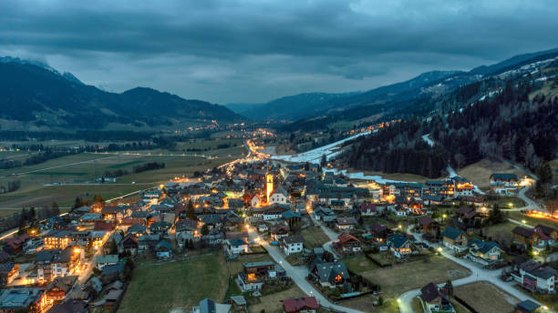

<!DOCTYPE html>
<html lang="en">
<head>
  <meta charset="UTF-8" />
  <meta name="viewport" content="width=device-width, initial-scale=1.0" />
  <title>Jammu & Kashmir Heritage Matrix | Educational Clearinghouse & Cultural Guild</title>
  <meta name="description" content="An inclusive, authoritative educational clearinghouse celebrating the hand-maiden art traditions, precise natural architecture, and culture of Jammu & Kashmir." />
  
  <!-- Google Fonts -->
  <link rel="preconnect" href="https://fonts.googleapis.com" />
  <link rel="preconnect" href="https://fonts.gstatic.com" crossorigin />
  <link href="https://fonts.googleapis.com/css2?family=Cinzel:wght@500;600;700;800&family=Crimson+Pro:ital,wght@0,400;0,600;1,400;1,600&family=Inter:wght@300;400;500;600;700&family=Playfair+Display:ital,wght@0,400;0,600;0,700;1,400;1,600&display=swap" rel="stylesheet" />

  <style>
    /* ═══════════════════════════════════════════════════
       DESIGN TOKENS — SCARLETEEN-INSPIRED EDUCATIONAL SYSTEM
    ═══════════════════════════════════════════════════ */
    :root {
      /* Palette */
      --canvas-ivory:       #FCFAF5;
      --bg-cell:            #FAF6F0;
      --bg-cell-hover:      #F4EFE6;
      --bg-dark:            #18121B;
      --bg-card-dark:       #221A26;
      
      --text-charcoal:      #1F1610;
      --text-secondary:     #5A4E45;
      --text-muted:         #8A7D74;
      --text-light:         #EAE2D8;

      /* Cultural & Category Colors */
      --saffron-gold:       #D96B1E;
      --saffron-amber:      #E8821C;
      --kashmir-violet:     #3B2347;
      --chinar-crimson:     #9E2A2B;
      --walnut-bark:        #5C4028;
      --basohli-vermilion:  #C0392B;
      --dal-jade:           #2A6F54;
      --tawi-sandstone:     #B8860B;
      --tilla-gold:         #D4AF37;
      --rule-taupe:         #D9D2C9;
      
      /* Scarleteen-Inspired UI Tokens */
      --badge-foundational: #2E7D32;
      --badge-advanced:     #7B1FA2;
      --badge-qa:           #C2185B;

      --border-primary:     1px solid #D9D2C9;
      --border-accent:      2px solid #D96B1E;
      --shadow-editorial:   0 4px 20px rgba(31,22,16,0.06);
      --shadow-hover:       0 12px 32px rgba(31,22,16,0.12);
    }

    /* Dark High-Contrast Reader Mode */
    body.dark-mode {
      --canvas-ivory:       #120D15;
      --bg-cell:            #1C1622;
      --bg-cell-hover:      #261E2E;
      --text-charcoal:      #F4EFE6;
      --text-secondary:     #D9CEC0;
      --text-muted:         #A89B8C;
      --rule-taupe:         #382C40;
      --border-primary:     1px solid #382C40;
    }

    *, *::before, *::after { box-sizing: border-box; margin: 0; padding: 0; }
    html { scroll-behavior: smooth; }

    body {
      background-color: var(--canvas-ivory);
      color: var(--text-charcoal);
      font-family: 'Inter', system-ui, -apple-system, sans-serif;
      font-size: 15px;
      line-height: 1.7;
      -webkit-font-smoothing: antialiased;
      overflow-x: hidden;
      transition: background 0.3s, color 0.3s;
    }

    /* ═══════════════════════════════════════════════════
       TOP UTILITY BAR & DIRECT SUPPORT BANNER
    ═══════════════════════════════════════════════════ */
    .top-support-banner {
      background: var(--kashmir-violet);
      color: #FAF6F0;
      padding: 10px 48px;
      font-size: 12px;
      display: flex;
      justify-content: space-between;
      align-items: center;
      border-bottom: 2px solid var(--saffron-gold);
    }
    .top-support-banner span { display: flex; align-items: center; gap: 8px; }
    .top-support-banner .accent { color: var(--tilla-gold); font-weight: 700; }

    .banner-actions { display: flex; gap: 12px; }
    .banner-link {
      color: #FAF6F0;
      text-decoration: none;
      font-weight: 600;
      letter-spacing: 0.05em;
      background: rgba(255,255,255,0.12);
      padding: 4px 10px;
      border-radius: 4px;
      transition: background 0.2s;
      cursor: pointer;
    }
    .banner-link:hover { background: var(--saffron-gold); }

    /* Search & Header Masthead */
    .masthead {
      position: sticky;
      top: 0;
      background: rgba(252, 250, 245, 0.97);
      backdrop-filter: blur(12px);
      border-bottom: 1px solid var(--rule-taupe);
      z-index: 1000;
      transition: all 0.3s ease;
    }
    body.dark-mode .masthead {
      background: rgba(18, 13, 21, 0.97);
    }

    .masthead-inner {
      max-width: 1400px;
      margin: 0 auto;
      padding: 16px 48px;
      display: flex;
      align-items: center;
      justify-content: space-between;
      gap: 20px;
    }

    .brand-box {
      display: flex;
      align-items: center;
      gap: 16px;
    }

    .brand-emblem {
      width: 44px;
      height: 44px;
      background: var(--kashmir-violet);
      border: 2px solid var(--saffron-gold);
      transform: rotate(45deg);
      display: flex;
      align-items: center;
      justify-content: center;
      box-shadow: 0 2px 8px rgba(59, 35, 71, 0.2);
      flex-shrink: 0;
    }
    .brand-emblem span {
      transform: rotate(-45deg);
      color: var(--tilla-gold);
      font-family: 'Cinzel', serif;
      font-weight: 700;
      font-size: 18px;
    }

    .brand-text-title {
      font-family: 'Cinzel', serif;
      font-size: 20px;
      font-weight: 700;
      color: var(--kashmir-violet);
      letter-spacing: 0.04em;
      line-height: 1.1;
    }
    body.dark-mode .brand-text-title { color: var(--tilla-gold); }

    .brand-text-subtitle {
      font-family: 'Inter', sans-serif;
      font-size: 9px;
      font-weight: 600;
      letter-spacing: 0.2em;
      text-transform: uppercase;
      color: var(--saffron-gold);
      margin-top: 2px;
    }

    /* Live Search Clearinghouse Input */
    .search-box-wrap {
      flex: 1;
      max-width: 440px;
      position: relative;
    }
    .search-input {
      width: 100%;
      padding: 10px 16px 10px 40px;
      font-family: 'Inter', sans-serif;
      font-size: 13px;
      border: 1px solid var(--rule-taupe);
      border-radius: 24px;
      background: var(--bg-cell);
      color: var(--text-charcoal);
      outline: none;
      transition: all 0.25s ease;
    }
    .search-input:focus {
      border-color: var(--saffron-gold);
      box-shadow: 0 0 0 3px rgba(217, 107, 30, 0.15);
      background: #FFF;
    }
    .search-icon {
      position: absolute;
      left: 14px;
      top: 50%;
      transform: translateY(-50%);
      font-size: 14px;
      color: var(--text-muted);
    }

    /* Navigation Filters */
    .filter-bar {
      display: flex;
      gap: 8px;
      list-style: none;
      flex-wrap: wrap;
    }

    .filter-btn {
      background: transparent;
      border: 1px solid var(--rule-taupe);
      padding: 8px 16px;
      font-family: 'Inter', sans-serif;
      font-size: 11px;
      font-weight: 600;
      letter-spacing: 0.08em;
      text-transform: uppercase;
      color: var(--text-secondary);
      cursor: pointer;
      border-radius: 20px;
      transition: all 0.25s ease;
      display: flex;
      align-items: center;
      gap: 6px;
    }

    .filter-btn:hover, .filter-btn.active {
      background: var(--kashmir-violet);
      color: #FCFAF5;
      border-color: var(--kashmir-violet);
      box-shadow: 0 4px 12px rgba(59, 35, 71, 0.15);
    }
    .filter-btn.active .btn-dot { background: var(--saffron-gold); }

    .btn-dot {
      width: 6px;
      height: 6px;
      border-radius: 50%;
      background: var(--rule-taupe);
    }

    .masthead-actions {
      display: flex;
      align-items: center;
      gap: 8px;
    }

    .icon-btn {
      background: var(--bg-cell);
      border: 1px solid var(--rule-taupe);
      color: var(--text-charcoal);
      padding: 8px 12px;
      font-size: 12px;
      font-weight: 600;
      cursor: pointer;
      border-radius: 4px;
      transition: all 0.2s ease;
    }
    .icon-btn:hover {
      background: var(--saffron-gold);
      color: #FFF;
      border-color: var(--saffron-gold);
    }

    /* ═══════════════════════════════════════════════════
       HERO BANNER & CLEARINGHOUSE INTRO
    ═══════════════════════════════════════════════════ */
    .hero-container {
      max-width: 1400px;
      margin: 0 auto;
      padding: 56px 48px 40px;
      display: grid;
      grid-template-columns: 1fr 400px;
      gap: 48px;
      align-items: center;
    }

    .hero-tag {
      display: inline-flex;
      align-items: center;
      gap: 10px;
      font-size: 10px;
      font-weight: 700;
      letter-spacing: 0.25em;
      text-transform: uppercase;
      color: var(--saffron-gold);
      margin-bottom: 16px;
    }
    .hero-tag-line { width: 30px; height: 2px; background: var(--saffron-gold); }

    .hero-title {
      font-family: 'Playfair Display', Georgia, serif;
      font-size: clamp(34px, 3.8vw, 54px);
      font-weight: 700;
      color: var(--kashmir-violet);
      line-height: 1.15;
      letter-spacing: -0.02em;
      margin-bottom: 20px;
    }
    body.dark-mode .hero-title { color: var(--tilla-gold); }
    .hero-title span {
      font-style: italic;
      color: var(--chinar-crimson);
      font-family: 'Crimson Pro', serif;
    }

    .hero-body {
      font-family: 'Crimson Pro', Georgia, serif;
      font-size: 19px;
      line-height: 1.65;
      color: var(--text-secondary);
      border-left: 3px solid var(--saffron-gold);
      padding-left: 24px;
      margin-bottom: 28px;
    }

    /* Direct Support / Q&A Highlight Box */
    .support-card-box {
      background: var(--bg-cell);
      border: 2px solid var(--saffron-gold);
      padding: 28px;
      box-shadow: var(--shadow-editorial);
    }
    .support-card-box h3 {
      font-family: 'Cinzel', serif;
      font-size: 18px;
      color: var(--kashmir-violet);
      margin-bottom: 8px;
    }
    body.dark-mode .support-card-box h3 { color: var(--tilla-gold); }

    .support-card-box p {
      font-size: 13px;
      color: var(--text-secondary);
      line-height: 1.6;
      margin-bottom: 20px;
    }

    .btn-ask-primary {
      width: 100%;
      background: var(--saffron-gold);
      color: #FFF;
      border: none;
      padding: 12px;
      font-family: 'Inter', sans-serif;
      font-size: 12px;
      font-weight: 700;
      letter-spacing: 0.12em;
      text-transform: uppercase;
      cursor: pointer;
      border-radius: 4px;
      transition: background 0.2s;
    }
    .btn-ask-primary:hover { background: var(--chinar-crimson); }

    /* ═══════════════════════════════════════════════════
       SCARLETEEN-STYLE EDUCATIONAL LIBRARY GRID
    ═══════════════════════════════════════════════════ */
    .section-container {
      max-width: 1400px;
      margin: 0 auto;
      padding: 64px 48px;
      border-bottom: 1px solid var(--rule-taupe);
    }

    .section-title-wrap {
      display: flex;
      align-items: flex-end;
      justify-content: space-between;
      margin-bottom: 40px;
    }

    .section-kicker {
      font-size: 10px;
      font-weight: 700;
      letter-spacing: 0.24em;
      text-transform: uppercase;
      color: var(--saffron-gold);
      display: block;
      margin-bottom: 8px;
    }

    .section-heading {
      font-family: 'Cinzel', serif;
      font-size: 30px;
      font-weight: 700;
      color: var(--kashmir-violet);
    }
    body.dark-mode .section-heading { color: var(--tilla-gold); }

    /* Library Cards Grid */
    .library-grid {
      display: grid;
      grid-template-columns: repeat(auto-fill, minmax(360px, 1fr));
      gap: 32px;
    }

    .library-card {
      background: var(--bg-cell);
      border: 1px solid var(--rule-taupe);
      padding: 28px;
      position: relative;
      display: flex;
      flex-direction: column;
      justify-content: space-between;
      transition: all 0.3s ease;
    }
    .library-card:hover {
      box-shadow: var(--shadow-hover);
      transform: translateY(-4px);
    }

    .card-meta-bar {
      display: flex;
      justify-content: space-between;
      align-items: center;
      margin-bottom: 14px;
      font-size: 11px;
    }

    .badge-level {
      font-size: 9px;
      font-weight: 700;
      letter-spacing: 0.15em;
      text-transform: uppercase;
      padding: 3px 8px;
      border-radius: 2px;
      color: #FFF;
    }
    .level-foundational { background: var(--badge-foundational); }
    .level-advanced     { background: var(--badge-advanced); }
    .level-qa           { background: var(--badge-qa); }

    .read-time {
      color: var(--text-muted);
      font-weight: 600;
    }

    .library-card-title {
      font-family: 'Playfair Display', serif;
      font-size: 20px;
      font-weight: 700;
      color: var(--kashmir-violet);
      margin-bottom: 10px;
      line-height: 1.3;
    }
    body.dark-mode .library-card-title { color: #FFF; }

    .library-card-body {
      font-family: 'Crimson Pro', serif;
      font-size: 16px;
      color: var(--text-secondary);
      line-height: 1.6;
      margin-bottom: 20px;
    }

    .hashtags-wrap {
      display: flex;
      gap: 6px;
      flex-wrap: wrap;
      margin-bottom: 20px;
    }

    .tag-chip {
      font-size: 10px;
      font-weight: 600;
      color: var(--saffron-gold);
      background: rgba(217, 107, 30, 0.08);
      padding: 2px 8px;
      border-radius: 12px;
      cursor: pointer;
    }
    .tag-chip:hover { background: var(--saffron-gold); color: #FFF; }

    .card-author {
      font-size: 11px;
      color: var(--text-muted);
      border-top: 1px solid var(--rule-taupe);
      padding-top: 12px;
      display: flex;
      justify-content: space-between;
    }

    /* ═══════════════════════════════════════════════════
       "ASK THE GUILD" COMMUNITY Q&A / ADVICE ARCHIVE
    ═══════════════════════════════════════════════════ */
    .qa-stack {
      display: flex;
      flex-direction: column;
      gap: 24px;
    }

    .qa-card {
      background: #FFF;
      border: 1px solid var(--rule-taupe);
      border-left: 4px solid var(--badge-qa);
      padding: 28px;
      box-shadow: var(--shadow-editorial);
    }
    body.dark-mode .qa-card { background: var(--bg-cell); }

    .qa-question-title {
      font-family: 'Playfair Display', serif;
      font-size: 18px;
      font-weight: 700;
      color: var(--chinar-crimson);
      margin-bottom: 12px;
      display: flex;
      align-items: center;
      gap: 10px;
    }
    .qa-question-title::before {
      content: 'Q:';
      font-family: 'Cinzel', serif;
      color: var(--saffron-gold);
    }

    .qa-answer-body {
      font-family: 'Crimson Pro', serif;
      font-size: 17px;
      color: var(--text-secondary);
      line-height: 1.65;
    }

    .qa-meta {
      font-size: 11px;
      color: var(--text-muted);
      margin-top: 14px;
      display: flex;
      gap: 16px;
    }

    /* ═══════════════════════════════════════════════════
       TALIM CRYPTOGRAPHIC WEAVER WIDGET
    ═══════════════════════════════════════════════════ */
    .talim-widget-container {
      background: var(--bg-dark);
      color: var(--text-light);
      border: 2px solid var(--tilla-gold);
      padding: 36px;
      margin-top: 48px;
      position: relative;
    }

    .talim-header {
      display: flex;
      justify-content: space-between;
      align-items: center;
      margin-bottom: 24px;
      border-bottom: 1px solid rgba(212, 175, 55, 0.3);
      padding-bottom: 16px;
    }

    .talim-title {
      font-family: 'Cinzel', serif;
      font-size: 20px;
      color: var(--tilla-gold);
    }

    .talim-grid {
      display: grid;
      grid-template-columns: 1fr 1fr;
      gap: 32px;
    }

    .talim-code-box {
      background: #110C14;
      font-family: 'Courier New', monospace;
      padding: 20px;
      border: 1px solid rgba(212, 175, 55, 0.4);
      font-size: 13px;
      line-height: 1.8;
      color: #64DFDF;
    }

    .talim-line {
      cursor: pointer;
      padding: 4px 8px;
      transition: background 0.2s;
    }
    .talim-line:hover, .talim-line.active {
      background: rgba(212, 175, 55, 0.2);
      color: #FFF;
    }

    .talim-visualizer {
      display: flex;
      flex-direction: column;
      justify-content: center;
      align-items: center;
      background: #251B2A;
      padding: 24px;
      border: 1px dashed rgba(212, 175, 55, 0.3);
      text-align: center;
    }

    .pattern-preview-swatch {
      width: 100%;
      height: 120px;
      background: linear-gradient(135deg, #9E2A2B, #3B2347, #D96B1E);
      border: 2px solid var(--tilla-gold);
      margin-bottom: 16px;
    }

    /* ═══════════════════════════════════════════════════
       INTERACTIVE READER POLL WIDGET
    ═══════════════════════════════════════════════════ */
    .poll-container {
      background: var(--bg-cell);
      border: 2px solid var(--tawi-sandstone);
      padding: 36px;
      margin-top: 48px;
    }

    .poll-title {
      font-family: 'Cinzel', serif;
      font-size: 20px;
      color: var(--kashmir-violet);
      margin-bottom: 8px;
    }
    body.dark-mode .poll-title { color: var(--tilla-gold); }

    .poll-options-list {
      list-style: none;
      margin-top: 20px;
      display: flex;
      flex-direction: column;
      gap: 12px;
    }

    .poll-option-btn {
      background: #FFF;
      border: 1px solid var(--rule-taupe);
      padding: 14px 20px;
      text-align: left;
      font-family: 'Inter', sans-serif;
      font-size: 13px;
      font-weight: 600;
      color: var(--text-charcoal);
      cursor: pointer;
      border-radius: 4px;
      position: relative;
      overflow: hidden;
      transition: all 0.2s;
    }
    body.dark-mode .poll-option-btn { background: var(--bg-card-dark); color: #FFF; }
    .poll-option-btn:hover { border-color: var(--saffron-gold); }

    .poll-bar {
      position: absolute;
      left: 0;
      top: 0;
      bottom: 0;
      background: rgba(217, 107, 30, 0.15);
      width: 0%;
      transition: width 0.6s ease;
      z-index: 0;
    }

    .poll-text { position: relative; z-index: 1; display: flex; justify-content: space-between; }

    /* ═══════════════════════════════════════════════════
       LIVE EXPERT CHAT WIDGET (FLOATING BOTTOM-RIGHT)
    ═══════════════════════════════════════════════════ */
    .live-chat-toggle {
      position: fixed;
      bottom: 28px;
      right: 28px;
      background: var(--saffron-gold);
      color: #FFF;
      border: none;
      padding: 14px 22px;
      border-radius: 30px;
      font-family: 'Inter', sans-serif;
      font-size: 13px;
      font-weight: 700;
      letter-spacing: 0.05em;
      cursor: pointer;
      box-shadow: 0 8px 24px rgba(217, 107, 30, 0.4);
      z-index: 1500;
      display: flex;
      align-items: center;
      gap: 10px;
      transition: transform 0.2s;
    }
    .live-chat-toggle:hover { transform: scale(1.05); }

    .live-chat-box {
      position: fixed;
      bottom: 90px;
      right: 28px;
      width: 360px;
      height: 480px;
      background: var(--canvas-ivory);
      border: 2px solid var(--saffron-gold);
      box-shadow: 0 16px 40px rgba(0,0,0,0.3);
      z-index: 1500;
      display: flex;
      flex-direction: column;
      opacity: 0;
      pointer-events: none;
      transform: translateY(20px);
      transition: all 0.3s ease;
    }
    .live-chat-box.active {
      opacity: 1;
      pointer-events: auto;
      transform: translateY(0);
    }

    .chat-header {
      background: var(--kashmir-violet);
      color: #FFF;
      padding: 14px 18px;
      font-family: 'Cinzel', serif;
      font-size: 14px;
      display: flex;
      justify-content: space-between;
      align-items: center;
    }

    .chat-messages {
      flex: 1;
      padding: 16px;
      overflow-y: auto;
      display: flex;
      flex-direction: column;
      gap: 12px;
      font-size: 13px;
    }

    .chat-msg {
      max-width: 82%;
      padding: 10px 14px;
      border-radius: 12px;
      line-height: 1.5;
    }
    .msg-bot {
      background: var(--bg-cell);
      border: 1px solid var(--rule-taupe);
      align-self: flex-start;
      color: var(--text-charcoal);
    }
    .msg-user {
      background: var(--saffron-gold);
      color: #FFF;
      align-self: flex-end;
    }

    .chat-input-wrap {
      padding: 12px;
      border-top: 1px solid var(--rule-taupe);
      display: flex;
      gap: 8px;
    }

    .chat-input {
      flex: 1;
      padding: 8px 12px;
      border: 1px solid var(--rule-taupe);
      border-radius: 18px;
      outline: none;
      font-size: 12px;
    }

    .chat-send-btn {
      background: var(--kashmir-violet);
      color: #FFF;
      border: none;
      padding: 8px 14px;
      border-radius: 18px;
      font-size: 11px;
      font-weight: 700;
      cursor: pointer;
    }

    /* ═══════════════════════════════════════════════════
       MODALS: ASK QUESTION & KAHWA SAMOVAR
    ═══════════════════════════════════════════════════ */
    .modal-overlay {
      position: fixed;
      inset: 0;
      background: rgba(24, 18, 27, 0.85);
      backdrop-filter: blur(8px);
      z-index: 2000;
      display: flex;
      align-items: center;
      justify-content: center;
      padding: 24px;
      opacity: 0;
      pointer-events: none;
      transition: opacity 0.3s ease;
    }
    .modal-overlay.active { opacity: 1; pointer-events: auto; }

    .modal-content {
      background: var(--canvas-ivory);
      border: 2px solid var(--saffron-gold);
      max-width: 620px;
      width: 100%;
      padding: 36px;
      position: relative;
    }

    .modal-close {
      position: absolute;
      top: 16px;
      right: 20px;
      background: transparent;
      border: none;
      font-size: 24px;
      cursor: pointer;
      color: var(--text-charcoal);
    }

    /* ═══════════════════════════════════════════════════
       ADVANCED COMPETITIVE QUIZ ENGINE STYLES
    ═══════════════════════════════════════════════════ */
    .quiz-layout-grid {
      display: grid;
      grid-template-columns: 1fr 300px;
      gap: 28px;
    }
    @media (max-width: 992px) {
      .quiz-layout-grid { grid-template-columns: 1fr; }
    }

    .palette-btn {
      width: 36px;
      height: 36px;
      border-radius: 6px;
      border: 1px solid var(--rule-taupe);
      background: var(--bg-cell);
      color: var(--text-charcoal);
      font-size: 12px;
      font-weight: 700;
      cursor: pointer;
      display: flex;
      align-items: center;
      justify-content: center;
      transition: all 0.2s ease;
    }
    .palette-btn:hover { border-color: var(--saffron-gold); }
    .palette-btn.active { border-color: var(--saffron-gold); outline: 2px solid var(--saffron-gold); }
    .palette-btn.correct { background: var(--badge-foundational); color: #FFF; border-color: var(--badge-foundational); }
    .palette-btn.incorrect { background: var(--chinar-crimson); color: #FFF; border-color: var(--chinar-crimson); }
    .palette-btn.flagged { background: var(--saffron-gold); color: #FFF; border-color: var(--saffron-gold); }

    .quiz-opt-btn {
      width: 100%;
      text-align: left;
      padding: 16px 20px;
      background: #FFF;
      border: 2px solid var(--rule-taupe);
      color: var(--text-charcoal);
      font-family: 'Inter', sans-serif;
      font-size: 14px;
      font-weight: 600;
      cursor: pointer;
      border-radius: 6px;
      margin-bottom: 12px;
      transition: all 0.25s ease;
      display: flex;
      justify-content: space-between;
      align-items: center;
    }
    body.dark-mode .quiz-opt-btn { background: var(--bg-card-dark); color: #FFF; border-color: #382C40; }
    .quiz-opt-btn:hover:not(:disabled) {
      border-color: var(--saffron-gold);
      background: rgba(217, 107, 30, 0.04);
      transform: translateX(4px);
    }
    .quiz-opt-btn.correct-opt {
      background: rgba(46, 125, 50, 0.12) !important;
      border-color: var(--badge-foundational) !important;
      color: var(--badge-foundational) !important;
    }
    .quiz-opt-btn.incorrect-opt {
      background: rgba(158, 42, 43, 0.12) !important;
      border-color: var(--chinar-crimson) !important;
      color: var(--chinar-crimson) !important;
    }

    .progress-bar-wrap {
      width: 100%;
      height: 8px;
      background: rgba(255,255,255,0.2);
      border-radius: 4px;
      overflow: hidden;
      margin-top: 10px;
    }
    .progress-bar-fill {
      height: 100%;
      background: var(--tilla-gold);
      width: 0%;
      transition: width 0.4s ease;
    }

    .form-group { margin-bottom: 16px; }
    .form-group label {
      display: block;
      font-size: 11px;
      font-weight: 700;
      letter-spacing: 0.1em;
      text-transform: uppercase;
      margin-bottom: 6px;
      color: var(--kashmir-violet);
    }
    .form-control {
      width: 100%;
      padding: 10px;
      border: 1px solid var(--rule-taupe);
      background: var(--bg-cell);
      color: var(--text-charcoal);
      outline: none;
      font-family: 'Inter', sans-serif;
    }

    /* ═══════════════════════════════════════════════════
       FOOTER IMPRINT
    ═══════════════════════════════════════════════════ */
    .footer {
      background: var(--kashmir-violet);
      color: var(--text-light);
      padding: 60px 48px 40px;
      border-top: 3px solid var(--saffron-gold);
    }

    .footer-inner {
      max-width: 1400px;
      margin: 0 auto;
      display: flex;
      justify-content: space-between;
      align-items: center;
      flex-wrap: wrap;
      gap: 32px;
    }

    .footer-brand {
      font-family: 'Cinzel', serif;
      font-size: 22px;
      color: var(--tilla-gold);
    }
    .footer-brand p {
      font-family: 'Inter', sans-serif;
      font-size: 11px;
      letter-spacing: 0.12em;
      color: rgba(250, 246, 240, 0.6);
      text-transform: uppercase;
      margin-top: 4px;
    }

    @media (max-width: 1024px) {
      .hero-container { grid-template-columns: 1fr; }
      .talim-grid { grid-template-columns: 1fr; }
      .masthead-inner { padding: 16px 24px; flex-wrap: wrap; }
      .section-container { padding: 48px 24px; }
      .live-chat-box { width: 320px; right: 16px; }
  <link rel="stylesheet" href="jammu-kashmir-website/styles.css">
  <script src="jammu-kashmir-website/js/news_loader.js" defer></script>
  <script src="jammu-kashmir-website/js/audio_pronounce.js" defer></script>
  <script src="jammu-kashmir-website/js/interactive_widgets.js" defer></script>
</head>
<body>

  <!-- ═════════════════ TOP SUPPORT BANNER ═════════════════ -->
  <div class="top-support-banner">
    <span>◆ DIRECT CULTURAL SUPPORT — <span class="accent">ASK OUR HERITAGE GUILD EXPERTS</span></span>
    <div class="banner-actions">
      <span class="banner-link" onclick="openAskModal()">💬 Ask a Question</span>
      <span class="banner-link" onclick="toggleLiveChat()">⚡ Live Expert Chat</span>
    </div>
  </div>

  <!-- ═════════════════ MASTHEAD & SEARCH CLEARINGHOUSE ═════════════════ -->
  <header class="masthead">
    <div class="masthead-inner">
      <div class="brand-box">
        <div class="brand-emblem">
          <span>JK</span>
        </div>
        <div>
          <h1 class="brand-text-title">Heritage Matrix</h1>
          <p class="brand-text-subtitle">Educational Clearinghouse</p>
        </div>
      </div>

      <!-- Real-Time Search Bar -->
      <div class="search-box-wrap">
        <span class="search-icon">🔍</span>
        <input type="text" id="site-search-input" class="search-input" placeholder="Search articles, Q&As, crafts, or architecture..." onkeyup="performSearch()" />
      </div>

      <!-- Category Filter Pills -->
      <ul class="filter-bar">
        <li><button class="filter-btn active" data-filter="all"><span class="btn-dot"></span>All Archive</button></li>
        <li><button class="filter-btn" onclick="document.getElementById('latest-news-section').scrollIntoView({behavior:'smooth'})" style="border-color:#c0392b; background:rgba(192,57,43,0.1); color:#921a28; font-weight:700;"><span class="btn-dot" style="background:#c0392b"></span>📰 Latest News &amp; Alerts</button></li>
        <li><button class="filter-btn" data-filter="exam-quiz" style="border-color:var(--saffron-gold); font-weight:700;"><span class="btn-dot" style="background:var(--saffron-gold)"></span>🎓 Exam Prep &amp; Quizzes</button></li>
        <li><button class="filter-btn" data-filter="dynasty-timeline"><span class="btn-dot"></span>📜 Dynastic Timeline</button></li>
        <li><button class="filter-btn" data-filter="district-atlas"><span class="btn-dot"></span>🏛️ District Atlas</button></li>
        <li><button class="filter-btn" data-filter="wildlife"><span class="btn-dot"></span>🦅 Wildlife &amp; Flora</button></li>
        <li><button class="filter-btn" data-filter="literary-vault"><span class="btn-dot"></span>✍️ Literary Vault</button></li>
        <li><button class="filter-btn" data-filter="master-db"><span class="btn-dot"></span>Master DB (40)</button></li>
        <li><button class="filter-btn" data-filter="etymology"><span class="btn-dot"></span>Etymology (24)</button></li>
        <li><button class="filter-btn" data-filter="wiki"><span class="btn-dot"></span>Wiki Articles (20)</button></li>
        <li><button class="filter-btn" data-filter="gallery"><span class="btn-dot"></span>Photo Gallery</button></li>
        <li><button class="filter-btn" data-filter="craft"><span class="btn-dot"></span>Craft Guides</button></li>
        <li><button class="filter-btn" data-filter="qa"><span class="btn-dot"></span>Guild Q&amp;A</button></li>
      </ul>

      <div class="masthead-actions">
        <button class="icon-btn" onclick="startTestMode()" style="background:var(--chinar-crimson); color:#FFF; border:none; font-weight:800; padding:6px 14px; border-radius:4px; font-size:12px; letter-spacing:0.05em;">📝 TAKE TEST</button>
        <button class="icon-btn" onclick="openStudySheetModal()">📄 Study Sheet</button>
        <button class="icon-btn" onclick="toggleDarkMode()" title="Contrast Toggle">🌓 Contrast</button>
        <button class="icon-btn" onclick="openKahwaModal()">☕ Kahwa</button>
      </div>
    </div>
  </header>

  <!-- ═════════════════ FLOATING ALWAYS-VISIBLE TEST BUTTON ═════════════════ -->
  <button onclick="startTestMode()" style="position:fixed; bottom:24px; left:24px; z-index:9999; background:var(--chinar-crimson); color:#FFF; border:2px solid var(--tilla-gold); padding:12px 20px; font-weight:800; font-size:13px; letter-spacing:0.05em; border-radius:30px; box-shadow:0 6px 20px rgba(158,42,43,0.4); cursor:pointer; display:flex; align-items:center; gap:8px; transition:transform 0.2s;" onhover="this.style.transform='scale(1.05)'">
    <span>📝</span> TAKE PRACTICE TEST
  </button>

  <!-- ═════════════════ HERO BANNER ═════════════════ -->
  <section class="hero-container">
    <div>
      <div class="hero-tag">
        <div class="hero-tag-line"></div>
        Independent Cultural Clearinghouse &amp; Competitive Exam Portal · 2026
      </div>
      <h2 class="hero-title">
        Comprehensive Education on <span>Hand-Maiden Art</span>, <span>Seismic Architecture</span> &amp; <span>Civil Services Prep</span>
      </h2>
      <p class="hero-body">
        Modeled as an inclusive, reader-first clearinghouse. Access fact-checked guides on <strong>zero-nail Khatamband carpentry</strong>, <strong>Basohli miniature art</strong>, <strong>cryptographic Kani weaving</strong>, and <strong>vernacular Taq architecture</strong> alongside a <strong>Tough Civil Services Quiz Engine</strong>.
      </p>

      <!-- Prominent Home Action Buttons -->
      <div style="display:flex; gap:12px; flex-wrap:wrap; margin-top:20px;">
        <button class="btn-ask-primary" style="width:auto; padding:12px 24px; background:var(--saffron-gold); font-size:13px; font-weight:700;" onclick="document.getElementById('exam-prep-section').scrollIntoView({behavior:'smooth'})">
          🎓 Launch Civil Services Quiz Engine &rarr;
        </button>
        <button class="btn-ask-primary" style="width:auto; padding:12px 20px; background:var(--kashmir-violet);" onclick="openStudySheetModal()">
          📄 Printable Study Sheet
        </button>
      </div>
    </div>

    <!-- Direct Support Highlight Card + Quick Quiz Callout -->
    <div style="display:flex; flex-direction:column; gap:20px;">
      <div class="support-card-box">
        <div style="font-size:10px; font-weight:800; color:var(--saffron-gold); letter-spacing:0.15em; text-transform:uppercase; margin-bottom:4px;">🎯 Competitive Test Series</div>
        <h3 style="font-size:18px;">Civil Services Quiz Challenge</h3>
        <p>Test your knowledge with UPSC/JKPSC/JKSSB tier questions across History, Polity, Geography, Culture, and Economy with instant pedagogical citations!</p>
        <button class="btn-ask-primary" style="background:var(--kashmir-violet);" onclick="document.getElementById('exam-prep-section').scrollIntoView({behavior:'smooth'})">Start Tough Quiz Now</button>
      </div>

      <div class="support-card-box" style="border-color:var(--rule-taupe); padding:20px;">
        <h3 style="font-size:15px;">Have a Specific Question?</h3>
        <p style="font-size:12px; margin-bottom:12px;">Our traditional master artisans, architectural historians, and weavers answer community questions every week.</p>
        <button class="btn-ask-primary" style="background:var(--saffron-gold);" onclick="openAskModal()">Submit Question to Guild</button>
      </div>
    </div>
  </section>

  <!-- ═════════════════ 20-DISTRICT WEATHER & DISASTER MONITOR ═════════════════ -->
  <div style="max-width: 1400px; margin: 2rem auto; padding: 0 48px;">
    <section id="district-weather-section" class="weather-section-wrapper">
      <div class="weather-header-top">
        <div class="weather-title-area">
          <span style="font-size: 0.8rem; font-weight: 700; color: #921a28; text-transform: uppercase; letter-spacing: 0.08em;">🌧️ IMD &amp; Disaster Control Monitoring</span>
          <h3>Jammu &amp; Kashmir 20-District Weather &amp; Calamity Watch</h3>
          <p style="color: var(--text-muted); font-size: 0.95rem; margin: 0;">Real-time temperature, rainfall, river gauge levels, and disaster alerts across all 20 districts of J&amp;K.</p>
        </div>

        <div class="weather-div-tabs">
          <button class="weather-div-btn active" onclick="setWeatherDivision('all', this)">🌐 All 20 Districts</button>
          <button class="weather-div-btn" onclick="setWeatherDivision('kashmir', this)">🏔️ Kashmir Division (10)</button>
          <button class="weather-div-btn" onclick="setWeatherDivision('jammu', this)">🏞️ Jammu Division (10)</button>
        </div>
      </div>

      <div id="districtWeatherContainer" class="district-weather-grid">
        <p style="color: var(--text-muted); padding: 1.5rem; text-align: center;">Loading 20-district weather &amp; river gauge status...</p>
      </div>
  </div>

  <!-- ═════════════════ NH-44 CORRIDOR TRACKER & GI AUTHENTICATOR ═════════════════ -->
  <div style="max-width: 1400px; margin: 2rem auto; padding: 0 48px;">
    <div id="nh44CorridorWidget"></div>

    <section class="gi-auth-box">
      <span style="font-size: 0.8rem; font-weight: 700; color: #921a28; text-transform: uppercase; letter-spacing: 0.08em;">🏷️ Geographical Indication (GI) Verification</span>
      <h4 style="font-family: var(--font-heading); color: var(--navy); font-size: 1.5rem; margin: 0.2rem 0;">Kashmir Saffron &amp; Pashmina GI Certification Authenticator</h4>
      <p style="color: var(--text-muted); font-size: 0.9rem; margin: 0;">Verify official GI tag codes to authenticate Pampore Saffron potency grade or Kani/Sozni Pashmina loom origin.</p>

      <div class="gi-auth-input-group">
        <input type="text" id="giCodeInput" class="gi-auth-input" placeholder="Enter GI Code (e.g. SAF-PMP-8841, SAF-PMP-8842, PAS-KNI-1092, PAS-SZN-2041)">
        <button class="btn-gi-verify" onclick="verifyGICode()">Verify Certificate &rarr;</button>
      </div>

      <div id="giResultBox"></div>
    </section>
  </div>

  <!-- ═════════════════ LATEST NEWS ABOUT JAMMU & KASHMIR ═════════════════ -->
  <div style="max-width: 1400px; margin: 2rem auto; padding: 0 48px;">
    <section id="latest-news-section" class="news-section-wrapper">
      
      <!-- Breaking News Marquee Ticker -->
      <div class="news-ticker-bar" role="region" aria-label="Breaking Jammu & Kashmir News Ticker">
        <div class="news-ticker-label">
          <span>🚨</span> BREAKING NEWS
        </div>
        <div class="news-ticker-window">
          <div class="news-ticker-track" id="newsMarqueeTrack">
            <!-- Injected via news_loader.js -->
          </div>
        </div>
      </div>

      <!-- News Section Header -->
      <div class="news-header-top">
        <div class="news-title-area">
          <span style="font-size: 0.8rem; font-weight: 700; color: #921a28; text-transform: uppercase; letter-spacing: 0.08em;">📡 Daily Media Monitor &amp; Regional Bulletins</span>
          <h2>Latest News about Jammu &amp; Kashmir</h2>
          <p class="news-subtext">Verified updates collected daily from Press Information Bureau, regional media, and disaster advisories across Politics, Development, and Natural Calamities.</p>
        </div>
        <div class="news-sync-box">
          <span class="news-last-updated" id="newsLastUpdated">Syncing Live Feed...</span>
          <button class="btn-refresh-feed" id="btnRefreshNewsFeed" onclick="refreshLiveNewsFeed()">🔄 Refresh Feed</button>
        </div>
      </div>

      <!-- Search & Category Filters -->
      <div class="news-controls-bar">
        <div class="news-search-box">
          <span class="news-search-icon">🔎</span>
          <input type="text" id="newsSearchInput" class="news-search-input" placeholder="Search news headlines, disasters, assembly bills, rail projects, landslides..." oninput="handleNewsSearch(this)">
        </div>

        <div class="news-filter-tabs">
          <div class="tab-group">
            <button class="news-filter-btn active" data-category="all" onclick="setNewsCategory('all', this)">
              🌐 All Updates <span class="count-pill" id="count-badge-all">0</span>
            </button>
            <button class="news-filter-btn" data-category="politics" onclick="setNewsCategory('politics', this)">
              🏛️ Politics &amp; Governance <span class="count-pill" id="count-badge-politics">0</span>
            </button>
            <button class="news-filter-btn" data-category="development" onclick="setNewsCategory('development', this)">
              🏗️ Infrastructure &amp; Development <span class="count-pill" id="count-badge-development">0</span>
            </button>
            <button class="news-filter-btn" data-category="calamity" onclick="setNewsCategory('calamity', this)">
              🌩️ Calamities &amp; Disasters <span class="count-pill" id="count-badge-calamity">0</span>
            </button>
            <button class="news-filter-btn" data-category="bookmarks" onclick="setNewsCategory('bookmarks', this)">
              ⭐ Bookmarks <span class="count-pill" id="count-badge-bookmarks">0</span>
            </button>
          </div>

          <div class="view-toggle-group">
            <button class="btn-view-toggle active" id="btn-view-grid" onclick="toggleNewsViewMode('grid')">▦ Grid</button>
            <button class="btn-view-toggle" id="btn-view-list" onclick="toggleNewsViewMode('list')">≡ List</button>
          </div>
        </div>
      </div>

      <!-- Dynamic News Grid Container -->
      <div id="newsGridContainer" class="news-card-grid">
        <p style="color: var(--text-muted); padding: 1.5rem; text-align: center;">Loading latest Jammu &amp; Kashmir news...</p>
      </div>
    </section>
  </div>

  <!-- Interactive News Detail Modal Overlay -->
  <div id="newsDetailModal" class="news-modal-overlay" style="display: none;">
    <div class="news-modal-container">
      <div class="news-modal-header">
        <button class="btn-modal-close" onclick="closeNewsModal()">&times;</button>
        <h3 class="news-modal-title" id="modalNewsTitle">News Article Headline</h3>
        <div class="news-modal-meta" id="modalNewsMeta"></div>
      </div>
      <div class="news-modal-body" id="modalNewsBody"></div>
      <div class="news-modal-footer">
        <span style="font-size: 0.8rem; color: #666;">Jammu &amp; Kashmir Verification Portal</span>
        <a href="#" id="modalNewsSourceLink" target="_blank" rel="noopener" class="btn-modal-source">
          🔗 Read Original Publisher Story &rarr;
        </a>
      </div>
    </div>
  </div>

  <!-- ═════════════════ EXAM PREPARATION & HIGH-DIFFICULTY QUIZ ENGINE ═════════════════ -->
  <section class="section-container" data-category="exam-quiz" id="exam-prep-section">
    <div class="section-title-wrap">
      <div>
        <span class="section-kicker" style="color:var(--saffron-gold); font-weight:800;">UPSC / JKPSC / JKSSB Civil Services Special</span>
        <h2 class="section-heading">Competitive Exam Preparation &amp; Tough Quiz Engine</h2>
      </div>
      <div style="font-size:12px; font-weight:700; color:var(--text-muted); background:var(--bg-cell); padding:6px 12px; border:1px solid var(--rule-taupe); border-radius:4px;">
        🎯 Tier: Advanced Competitive Standards
      </div>
    </div>

    <!-- High-Yield Study Notes Summary Matrices -->
    <div style="display:grid; grid-template-columns:repeat(auto-fit, minmax(280px, 1fr)); gap:20px; margin-bottom:36px;">
      <div style="background:var(--bg-cell); border:1px solid var(--rule-taupe); border-left:4px solid var(--kashmir-violet); padding:20px;">
        <h4 style="font-family:'Cinzel',serif; color:var(--kashmir-violet); font-size:15px; margin-bottom:8px;">📜 History &amp; Dynastic Eras</h4>
        <p style="font-size:13px; color:var(--text-secondary); line-height:1.5;">Key focus on <em>Rajatarangini</em> (Kalhana), Karkotas (Lalitaditya's Martand Sun Temple), Utpalas (Avantivarman), Shah Mir Dynasty (Sultan Zain-ul-Abidin/Budshah), and the 1846 Treaty of Amritsar.</p>
      </div>

      <div style="background:var(--bg-cell); border:1px solid var(--rule-taupe); border-left:4px solid var(--saffron-gold); padding:20px;">
        <h4 style="font-family:'Cinzel',serif; color:var(--saffron-gold); font-size:15px; margin-bottom:8px;">⚖️ Polity &amp; Reorganisation Act 2019</h4>
        <p style="font-size:13px; color:var(--text-secondary); line-height:1.5;">Analysis of Instrument of Accession (1947), 1952 Delhi Agreement, J&amp;K Constitution 1956, Article 370/35A abrogation, and J&amp;K Reorganisation Act 2019 (239A vs 239 models).</p>
      </div>

      <div style="background:var(--bg-cell); border:1px solid var(--rule-taupe); border-left:4px solid var(--dal-jade); padding:20px;">
        <h4 style="font-family:'Cinzel',serif; color:var(--dal-jade); font-size:15px; margin-bottom:8px;">🗺️ Geography, Passes &amp; Indus Water Treaty</h4>
        <p style="font-size:13px; color:var(--text-secondary); line-height:1.5;">Mountain passes (Zojila, Banihal, Khardung La, Sinthan), Indus Waters Treaty 1960 allocations (Western vs Eastern rivers), and high-altitude wetland ecology.</p>
      </div>

      <div style="background:var(--bg-cell); border:1px solid var(--rule-taupe); border-left:4px solid var(--chinar-crimson); padding:20px;">
        <h4 style="font-family:'Cinzel',serif; color:var(--chinar-crimson); font-size:15px; margin-bottom:8px;">🏛️ Seismic Architecture &amp; GI Tag Economy</h4>
        <p style="font-size:13px; color:var(--text-secondary); line-height:1.5;">Vernacular <em>Dhajji Dewari</em> &amp; <em>Taq</em> timber framing, Basohli miniature painting beetle-wing art, Kani Talim weaving, and Pampore Saffron GI tag chemistry.</p>
      </div>
    </div>

    <!-- Subject Selector Buttons for Quiz -->
    <div style="background:var(--kashmir-violet); color:#FFF; padding:20px 24px; border-radius:4px; margin-bottom:28px;">
      <div style="display:flex; justify-content:space-between; align-items:center; flex-wrap:wrap; gap:12px; margin-bottom:16px;">
        <span style="font-family:'Cinzel',serif; font-size:16px; color:var(--tilla-gold);">Select Exam Subject Module:</span>
        <div style="font-size:12px; color:rgba(255,255,255,0.8);">Current Score: <strong id="quiz-score" style="color:var(--tilla-gold); font-size:16px;">0</strong> / <span id="quiz-total">10</span></div>
      </div>

      <div style="display:flex; gap:8px; flex-wrap:wrap;" id="quiz-subject-pills">
        <button class="quiz-subject-btn active" onclick="loadSubjectQuiz('history', this)" style="padding:8px 16px; border:1px solid var(--saffron-gold); background:var(--saffron-gold); color:#FFF; font-size:12px; font-weight:700; cursor:pointer; border-radius:20px;">📜 History &amp; Dynasties</button>
        <button class="quiz-subject-btn" onclick="loadSubjectQuiz('polity', this)" style="padding:8px 16px; border:1px solid rgba(255,255,255,0.3); background:transparent; color:#FFF; font-size:12px; font-weight:700; cursor:pointer; border-radius:20px;">⚖️ Polity &amp; Reorganisation</button>
        <button class="quiz-subject-btn" onclick="loadSubjectQuiz('geography', this)" style="padding:8px 16px; border:1px solid rgba(255,255,255,0.3); background:transparent; color:#FFF; font-size:12px; font-weight:700; cursor:pointer; border-radius:20px;">🗺️ Geography &amp; Passes</button>
        <button class="quiz-subject-btn" onclick="loadSubjectQuiz('culture', this)" style="padding:8px 16px; border:1px solid rgba(255,255,255,0.3); background:transparent; color:#FFF; font-size:12px; font-weight:700; cursor:pointer; border-radius:20px;">🎨 Art, Culture &amp; Architecture</button>
        <button class="quiz-subject-btn" onclick="loadSubjectQuiz('economy', this)" style="padding:8px 16px; border:1px solid rgba(255,255,255,0.3); background:transparent; color:#FFF; font-size:12px; font-weight:700; cursor:pointer; border-radius:20px;">🌱 Economy &amp; Ecology</button>
      </div>
    </div>

    <!-- Active Quiz Questions Engine Container -->
    <div id="quiz-active-container" style="background:#FFF; border:2px solid var(--saffron-gold); padding:32px; box-shadow:var(--shadow-editorial);">
      <!-- Loaded dynamically via JavaScript -->
    </div>
  </section>

  <!-- ═════════════════ INTERACTIVE DYNASTIC TIMELINE ═════════════════ -->
  <section class="section-container" data-category="dynasty-timeline" id="dynasty-timeline-section">
    <div class="section-title-wrap">
      <div>
        <span class="section-kicker">Chronological Matrix (3000 BCE – Present)</span>
        <h2 class="section-heading">Dynastic Epochs &amp; Historical Timeline</h2>
      </div>
    </div>

    <div class="qa-stack">
      <div class="qa-card" style="border-left-color:var(--kashmir-violet);">
        <div style="font-size:11px; font-weight:800; letter-spacing:0.15em; color:var(--saffron-gold); text-transform:uppercase; margin-bottom:6px;">3000 BCE – 3rd Century BCE</div>
        <h3 class="qa-question-title" style="color:var(--kashmir-violet);">Mythological Origins &amp; Mauryan Era (Satisar &amp; Emperor Ashoka)</h3>
        <p class="qa-answer-body">
          According to the <em>Nilamata Purana</em>, Kashmir was originally a vast high-altitude lake named <em>Satisar</em>, inhabited by the demon Jalodbhava. Sage Kashyapa drained the lake, after which Goddess Parvati manifested as the Vitasta River (Jhelum). Historically, Emperor Ashoka introduced Buddhism to Kashmir in the 3rd Century BCE and established the original city of <em>Srinagari</em> (near Pandrethan).
        </p>
        <div class="qa-meta"><span>Key Landmarks: Pandrethan Ruins, Satisar Purana Lore</span><span>Source: Nilamata Purana &amp; Rajatarangini</span></div>
      </div>

      <div class="qa-card" style="border-left-color:var(--saffron-gold);">
        <div style="font-size:11px; font-weight:800; letter-spacing:0.15em; color:var(--saffron-gold); text-transform:uppercase; margin-bottom:6px;">1st Century CE – 8th Century CE</div>
        <h3 class="qa-question-title" style="color:var(--kashmir-violet);">Kushan Empire &amp; Karkota Dynasty (Fourth Buddhist Council &amp; Lalitaditya)</h3>
        <p class="qa-answer-body">
          Emperor Kanishka convened the <strong>Fourth Buddhist Council</strong> at Kundalvana (Kashmir), formalizing Mahayana Buddhism. In 724 CE, Emperor <strong>Lalitaditya Muktapida</strong> of the Karkota Dynasty unified Kashmir and expanded his empire across Northern India and Central Asia, commissioning the monumental <strong>Martand Sun Temple</strong> at Anantnag.
        </p>
        <div class="qa-meta"><span>Key Landmarks: Martand Sun Temple, Kundalvana Stupa</span><span>Source: Kalhana's Rajatarangini Book IV</span></div>
      </div>

      <div class="qa-card" style="border-left-color:var(--dal-jade);">
        <div style="font-size:11px; font-weight:800; letter-spacing:0.15em; color:var(--saffron-gold); text-transform:uppercase; margin-bottom:6px;">9th Century CE – 14th Century CE</div>
        <h3 class="qa-question-title" style="color:var(--kashmir-violet);">Utpala &amp; Lohara Dynasties (Avantivarman &amp; Kalhana's Historiography)</h3>
        <p class="qa-answer-body">
          King <strong>Avantivarman</strong> (855-883 CE) founded the Utpala Dynasty and built the Avantipur temple complex. His prime minister <strong>Suyya</strong> engineered legendary drainage works on the Jhelum River to prevent floods. In 1148-1149 CE, during the Lohara Dynasty under King Jayasimha, scholar <strong>Kalhana</strong> composed the <em>Rajatarangini</em>, India's first systematic historical chronicle.
        </p>
        <div class="qa-meta"><span>Key Landmarks: Avantipur Ruins, Suyya Drainage Channels</span><span>Source: Rajatarangini Book V-VIII</span></div>
      </div>

      <div class="qa-card" style="border-left-color:var(--chinar-crimson);">
        <div style="font-size:11px; font-weight:800; letter-spacing:0.15em; color:var(--saffron-gold); text-transform:uppercase; margin-bottom:6px;">1339 CE – 1586 CE</div>
        <h3 class="qa-question-title" style="color:var(--kashmir-violet);">Shah Mir Dynasty &amp; Golden Reign of Sultan Zain-ul-Abidin (Budshah)</h3>
        <p class="qa-answer-body">
          Established by Shah Mir in 1339 CE as the first Muslim Sultanate. <strong>Sultan Zain-ul-Abidin</strong> (1420-1470 CE), reverently called <em>Budshah</em> (Great King), ushered in a golden era of religious tolerance, commissioned Persian translations of the <em>Mahabharata</em> and <em>Rajatarangini</em>, imported Samarqand master artisans to establish Kani weaving, papier-mâché, and Khatamband crafts, and built the artificial island <em>Zaina Lank</em> in Wular Lake.
        </p>
        <div class="qa-meta"><span>Key Landmarks: Zaina Lank, Craft Guilds</span><span>Source: Tarikh-i-Rashidi &amp; Jonaraja Chronicles</span></div>
      </div>

      <div class="qa-card" style="border-left-color:var(--badge-advanced);">
        <div style="font-size:11px; font-weight:800; letter-spacing:0.15em; color:var(--saffron-gold); text-transform:uppercase; margin-bottom:6px;">1846 CE – 2019 CE</div>
        <h3 class="qa-question-title" style="color:var(--kashmir-violet);">Dogra Dynasty, Instrument of Accession &amp; Reorganisation Act 2019</h3>
        <p class="qa-answer-body">
          Under the <strong>Treaty of Amritsar (1846)</strong>, Maharaja Gulab Singh established the Dogra Princely State of J&amp;K. On October 26, 1947, Maharaja Hari Singh signed the <strong>Instrument of Accession</strong> to India. On August 5-6, 2019, Parliament passed the <strong>Jammu and Kashmir Reorganisation Act, 2019</strong>, creating two Union Territories (J&amp;K UT with legislature under Art 239A and Ladakh UT under Art 239).
        </p>
        <div class="qa-meta"><span>Key Landmarks: Amar Mahal Palace, Hari Parbat Fort</span><span>Source: Treaty of Amritsar &amp; Reorganisation Act 2019</span></div>
      </div>
    </div>
  </section>

  <!-- ═════════════════ DISTRICT & DIVISION STATISTICAL ATLAS ═════════════════ -->
  <section class="section-container" data-category="district-atlas" id="district-atlas-section">
    <div class="section-title-wrap">
      <div>
        <span class="section-kicker">Regional Administrative Profile (20 Districts)</span>
        <h2 class="section-heading">J&amp;K &amp; Ladakh District Atlas</h2>
      </div>
    </div>

    <div class="library-grid">
      <!-- Srinagar -->
      <article class="library-card" onclick="openDistrictModal('srinagar')" style="cursor:pointer;" title="Click to view full district profile">
        <div>
          <div class="card-meta-bar">
            <span class="badge-level level-foundational">Kashmir Division</span>
            <span class="read-time">Summer Capital</span>
          </div>
          <h3 class="library-card-title">Srinagar District &rarr;</h3>
          <p class="library-card-body"><strong>HQ:</strong> Srinagar · <strong>Rivers:</strong> Jhelum, Sindh · <strong>Key Highlights:</strong> Dal Lake, Nigeen Lake, Mughal Gardens, Hari Parbat, Khatamband &amp; Pashmina handicraft centers.</p>
        </div>
        <div class="card-author"><span>Urban Core</span><span>Click for Full Profile</span></div>
      </article>

      <!-- Jammu -->
      <article class="library-card" onclick="openDistrictModal('jammu')" style="cursor:pointer;" title="Click to view full district profile">
        <div>
          <div class="card-meta-bar">
            <span class="badge-level level-foundational">Jammu Division</span>
            <span class="read-time">Winter Capital</span>
          </div>
          <h3 class="library-card-title">Jammu District &rarr;</h3>
          <p class="library-card-body"><strong>HQ:</strong> Jammu · <strong>Rivers:</strong> Tawi River · <strong>Key Highlights:</strong> "City of Temples", Raghunath Temple, Bahu Fort, Amar Mahal Palace Museum, Dogra Heritage center.</p>
        </div>
        <div class="card-author"><span>Foothill Hub</span><span>Click for Full Profile</span></div>
      </article>

      <!-- Anantnag -->
      <article class="library-card" onclick="openDistrictModal('anantnag')" style="cursor:pointer;" title="Click to view full district profile">
        <div>
          <div class="card-meta-bar">
            <span class="badge-level level-foundational">Kashmir Division</span>
            <span class="read-time">South Kashmir</span>
          </div>
          <h3 class="library-card-title">Anantnag District &rarr;</h3>
          <p class="library-card-body"><strong>HQ:</strong> Anantnag · <strong>Rivers:</strong> Lidder, Bringhi, Jhelum · <strong>Key Highlights:</strong> Martand Sun Temple, Pahalgam valley, Achabal spring, Verinag spring, Amarnath Yatra route.</p>
        </div>
        <div class="card-author"><span>Valley Gateway</span><span>Click for Full Profile</span></div>
      </article>

      <!-- Kathua -->
      <article class="library-card" onclick="openDistrictModal('kathua')" style="cursor:pointer;" title="Click to view full district profile">
        <div>
          <div class="card-meta-bar">
            <span class="badge-level level-foundational">Jammu Division</span>
            <span class="read-time">Gateway of J&amp;K</span>
          </div>
          <h3 class="library-card-title">Kathua District &rarr;</h3>
          <p class="library-card-body"><strong>HQ:</strong> Kathua · <strong>Rivers:</strong> Ravi, Ujh · <strong>Key Highlights:</strong> Birthplace of 17th-century Basohli Miniature Painting school, Ranjit Sagar Dam, Jasrota Sanctuary.</p>
        </div>
        <div class="card-author"><span>Art &amp; Power Hub</span><span>Click for Full Profile</span></div>
      </article>

      <!-- Pulwama -->
      <article class="library-card" onclick="openDistrictModal('pulwama')" style="cursor:pointer;" title="Click to view full district profile">
        <div>
          <div class="card-meta-bar">
            <span class="badge-level level-foundational">Kashmir Division</span>
            <span class="read-time">Saffron Capital</span>
          </div>
          <h3 class="library-card-title">Pulwama District &rarr;</h3>
          <p class="library-card-body"><strong>HQ:</strong> Pulwama · <strong>Rivers:</strong> Jhelum · <strong>Key Highlights:</strong> Pampore GI Tag Saffron karewa fields, Avantipur 9th-century temple ruins, Shikargah Tral reserves.</p>
        </div>
        <div class="card-author"><span>Horticulture Hub</span><span>Click for Full Profile</span></div>
      </article>

      <!-- Leh & Kargil -->
      <article class="library-card" onclick="openDistrictModal('ladakh')" style="cursor:pointer;" title="Click to view full district profile">
        <div>
          <div class="card-meta-bar">
            <span class="badge-level level-advanced">Ladakh UT</span>
            <span class="read-time">Trans-Himalaya</span>
          </div>
          <h3 class="library-card-title">Leh &amp; Kargil Districts &rarr;</h3>
          <p class="library-card-body"><strong>HQ:</strong> Leh / Kargil · <strong>Rivers:</strong> Indus, Zanskar, Shyok, Suru · <strong>Key Highlights:</strong> Pangong Tso, Tso Moriri, Lamayuru &amp; Hemis Monasteries, Khardung La, Drass.</p>
        </div>
        <div class="card-author"><span>Cold Desert</span><span>Click for Full Profile</span></div>
      </article>
    </div>
  </section>

  <!-- ═════════════════ WILDLIFE & ECOLOGICAL CLEARINGHOUSE ═════════════════ -->
  <section class="section-container" data-category="wildlife" id="wildlife-section">
    <div class="section-title-wrap">
      <div>
        <span class="section-kicker">Himalayan Biodiversity &amp; Endemic Species</span>
        <h2 class="section-heading">Wildlife &amp; Ecological Reserves</h2>
      </div>
    </div>

    <div class="library-grid">
      <article class="library-card">
        <div>
          <div class="card-meta-bar">
            <span class="badge-level level-foundational">State Animal</span>
            <span class="read-time">Critically Endangered</span>
          </div>
          <h3 class="library-card-title">Hangul (Kashmir Stag - <em>Cervus elaphus hanglu</em>)</h3>
          <p class="library-card-body">The last surviving red deer subspecies in the Indian subcontinent. Protected in Dachigam National Park, featuring majestic multi-tined antlers and seasonal vertical migrations between riverine valleys and alpine turf.</p>
        </div>
        <div class="card-author"><span>Dachigam NP</span><span>Endemic Species</span></div>
      </article>

      <article class="library-card">
        <div>
          <div class="card-meta-bar">
            <span class="badge-level level-advanced">High Altitude Predator</span>
            <span class="read-time">Vulnerable</span>
          </div>
          <h3 class="library-card-title">Snow Leopard (<em>Panthera uncia</em>)</h3>
          <p class="library-card-body">Known as the "Ghost of the Mountains", roaming the rugged high crags of Hemis National Park (Ladakh) and Kishtwar High Altitude National Park. Preys on wild Bharal (blue sheep) and ibex.</p>
        </div>
        <div class="card-author"><span>Hemis NP &amp; Kishtwar</span><span>Cold Desert Apex</span></div>
      </article>

      <article class="library-card">
        <div>
          <div class="card-meta-bar">
            <span class="badge-level level-advanced">Wild Goat</span>
            <span class="read-time">Near Threatened</span>
          </div>
          <h3 class="library-card-title">Markhor (<em>Capra falconeri</em>)</h3>
          <p class="library-card-body">The world's largest wild goat species, recognized by its dramatic corkscrew-shaped horns. Protected in Kazinag National Park along the Pir Panjal range in Kashmir.</p>
        </div>
        <div class="card-author"><span>Kazinag NP</span><span>Pir Panjal Reserve</span></div>
      </article>

      <article class="library-card">
        <div>
          <div class="card-meta-bar">
            <span class="badge-level level-foundational">Migratory Bird</span>
            <span class="read-time">Ramsar Special</span>
          </div>
          <h3 class="library-card-title">Black-Necked Crane (<em>Grus nigricollis</em>)</h3>
          <p class="library-card-body">Revered high-altitude migratory bird that breeds in the Changthangi wetland lakes (Tso Moriri, Pangong Tso) of Ladakh, holding spiritual significance in Ladakhi folklore.</p>
        </div>
        <div class="card-author"><span>Changthang Plateau</span><span>High Altitude Wetland</span></div>
      </article>
    </div>
  </section>

  <!-- ═════════════════ LITERARY VAULT & POETIC HERITAGE ═════════════════ -->
  <section class="section-container" data-category="literary-vault" id="literary-vault-section">
    <div class="section-title-wrap">
      <div>
        <span class="section-kicker">Kashmiri Shaivism, Sufi Rishis &amp; Romantic Lyrics</span>
        <h2 class="section-heading">Literary Vault &amp; Poetic Heritage</h2>
      </div>
    </div>

    <div class="qa-stack">
      <div class="qa-card" style="border-left-color:var(--kashmir-violet);">
        <h3 class="qa-question-title" style="color:var(--kashmir-violet);">Lal Ded (Lalleshwari) — 14th Century Shaivite Mystic (*Vakhs*)</h3>
        <p class="qa-answer-body">
          <em>"Shiv chuy thali thali rozan, mo zan Hindu ta Musalman.<br>Truk ahak panan apan zan, soy chay Sahibas sathi parzan."</em><br><br>
          <strong>Translation:</strong> "Shiva abides in every place; do not distinguish between Hindu and Muslim. If you are wise, know your true Self—that alone is the true recognition of God."
        </p>
        <div class="qa-meta"><span>Form: Vakh (Poetic Couplets)</span><span>Philosophy: Kashmiri Shaivism / Non-Duality</span></div>
      </div>

      <div class="qa-card" style="border-left-color:var(--saffron-gold);">
        <h3 class="qa-question-title" style="color:var(--kashmir-violet);">Nund Rishi (Sheikh Noor-ud-Din Wali) — Founder of Rishi Order (*Shrukhs*)</h3>
        <p class="qa-answer-body">
          <em>"Ann poshi teli yeli van poshi."</em><br><br>
          <strong>Translation &amp; Ecological Vision:</strong> "Food will last only so long as forests last." Nund Rishi's 15th-century verses combined Sufi devotion with profound environmental ecology, warning against deforestation centuries before modern climate science.
        </p>
        <div class="qa-meta"><span>Form: Shrukh (Spiritual Quatrain)</span><span>Philosophy: Rishi Sufism &amp; Ecology</span></div>
      </div>

      <div class="qa-card" style="border-left-color:var(--chinar-crimson);">
        <h3 class="qa-question-title" style="color:var(--kashmir-violet);">Habba Khatoon — 16th Century Nightingale of Kashmir (*Lol* Lyrics)</h3>
        <p class="qa-answer-body">
          <em>"Voloha myani posh-i-matiyoo, Chhaav mai baalyat-i-daar...!"</em><br><br>
          <strong>Translation:</strong> "Come, my sweet lover of flowers, let me enjoy the blossoming spring of youth...!" Queen Habba Khatoon, wife of King Yusuf Shah Chak, pioneered the <em>Lol</em> genre—melancholic, lyrical love songs expressing longing and natural beauty.
        </p>
        <div class="qa-meta"><span>Form: Lol Lyric (Love Song)</span><span>Era: Chak Dynasty</span></div>
      </div>
    </div>
  </section>

  <!-- ═════════════════ MASTER REGIONAL DATABASE ═════════════════ -->
  <section class="section-container" data-category="master-db" id="master-db-section">
    <div class="section-title-wrap">
      <div>
        <span class="section-kicker">Expanded Dataset (40 Records)</span>
        <h2 class="section-heading">Master Regional Database</h2>
      </div>
      <div style="display:flex; gap:8px; flex-wrap:wrap;">
        <button class="filter-pill-type active" onclick="filterMasterDb('all', this)" style="padding:6px 14px; border-radius:16px; border:1px solid var(--rule-taupe); background:var(--kashmir-violet); color:#FFF; font-size:11px; font-weight:600; cursor:pointer;">All Types</button>
        <button class="filter-pill-type" onclick="filterMasterDb('River', this)" style="padding:6px 14px; border-radius:16px; border:1px solid var(--rule-taupe); background:var(--bg-cell); color:var(--text-secondary); font-size:11px; font-weight:600; cursor:pointer;">Rivers</button>
        <button class="filter-pill-type" onclick="filterMasterDb('Lake', this)" style="padding:6px 14px; border-radius:16px; border:1px solid var(--rule-taupe); background:var(--bg-cell); color:var(--text-secondary); font-size:11px; font-weight:600; cursor:pointer;">Lakes</button>
        <button class="filter-pill-type" onclick="filterMasterDb('Tourist Spot', this)" style="padding:6px 14px; border-radius:16px; border:1px solid var(--rule-taupe); background:var(--bg-cell); color:var(--text-secondary); font-size:11px; font-weight:600; cursor:pointer;">Tourist Spots</button>
      </div>
    </div>

    <div class="library-grid" id="master-db-grid">
      <!-- Loaded dynamically via JavaScript -->
    </div>
  </section>

  <!-- ═════════════════ ETYMOLOGY & TOPONYMIC DICTIONARY ═════════════════ -->
  <section class="section-container" data-category="etymology" id="etymology-section">
    <div class="section-title-wrap">
      <div>
        <span class="section-kicker">Toponymic Reference (24 Entries)</span>
        <h2 class="section-heading">Etymology &amp; Linguistic Origins</h2>
      </div>
    </div>

    <div class="library-grid" id="etymology-grid">
      <!-- Loaded dynamically via JavaScript -->
    </div>
  </section>

  <!-- ═════════════════ HISTORICAL WIKI ARCHIVES ═════════════════ -->
  <section class="section-container" data-category="wiki" id="wiki-archives-section">
    <div class="section-title-wrap">
      <div>
        <span class="section-kicker">MediaWiki Scraped Archives (10 Articles)</span>
        <h2 class="section-heading">Historical Reference Documents</h2>
      </div>
    </div>

    <div class="qa-stack" id="wiki-grid">
      <!-- Loaded dynamically via JavaScript -->
    </div>
  </section>

  <!-- ═════════════════ VISUAL PHOTOGRAPHY GALLERY ═════════════════ -->
  <section class="section-container" data-category="gallery" id="gallery-section">
    <div class="section-title-wrap">
      <div>
        <span class="section-kicker">Visual Archive</span>
        <h2 class="section-heading">Photographic Heritage Gallery</h2>
      </div>
    </div>

    <div class="library-grid" id="gallery-grid">
      <article class="library-card">
        
        <h3 class="library-card-title">Houseboats &amp; Shikaras of Dal Lake</h3>
        <p class="library-card-body">Traditional wooden houseboats and decorated shikaras floating on the waters of Dal Lake, Srinagar.</p>
        <div class="card-author"><span>Srinagar, Kashmir</span><span>Local Asset</span></div>
      </article>

      <article class="library-card">
        
        <h3 class="library-card-title">Lamayuru Moonland Monastery</h3>
        <p class="library-card-body">Ancient Tibetan Buddhist monastery perched on moonlike rock formations in Leh Ladakh.</p>
        <div class="card-author"><span>Leh, Ladakh</span><span>Local Asset</span></div>
      </article>

      <article class="library-card">
        
        <h3 class="library-card-title">Srinagar Valley Panorama</h3>
        <p class="library-card-body">Historic urban layout of Srinagar framed by the Zabarwan mountain ranges.</p>
        <div class="card-author"><span>Srinagar, Kashmir</span><span>Local Asset</span></div>
      </article>

      <article class="library-card">
        
        <h3 class="library-card-title">Vernacular Himalayan Village Architecture</h3>
        <p class="library-card-body">High-altitude stone and timber housing structures designed for earthquake resilience.</p>
        <div class="card-author"><span>Rural J&amp;K</span><span>Local Asset</span></div>
      </article>

      <article class="library-card">
        
        <h3 class="library-card-title">Historical Vexillology &amp; State Emblems</h3>
        <p class="library-card-body">Archival banners and historic heraldry depicting regional symbols of Jammu, Kashmir, and Ladakh.</p>
        <div class="card-author"><span>Vexillological Archive</span><span>Local Asset</span></div>
      </article>
    </div>
  </section>

  <!-- ═════════════════ EDUCATIONAL LIBRARY GRID ═════════════════ -->
  <section class="section-container" data-category="craft">
    <div class="section-title-wrap">
      <div>
        <span class="section-kicker">Resource Library</span>
        <h2 class="section-heading">Featured Educational Guides</h2>
      </div>
    </div>

    <div class="library-grid" id="library-grid">
      <!-- Article 1 -->
      <article class="library-card" data-tags="khatamband woodcraft seismic joinery">
        <div>
          <div class="card-meta-bar">
            <span class="badge-level level-foundational">Foundational Guide</span>
            <span class="read-time">5 min read</span>
          </div>
          <h3 class="library-card-title">Khatamband: The Zero-Nail Ceiling Joinery</h3>
          <p class="library-card-body">
            How small polygonal pine and deodar wood pieces interlock without nails, creating flexible ceiling frameworks that withstand freezing winters and earth tremors.
          </p>
          <div class="hashtags-wrap">
            <span class="tag-chip">#Khatamband</span>
            <span class="tag-chip">#SeismicArchitecture</span>
            <span class="tag-chip">#DeodarWood</span>
          </div>
        </div>
        <div class="card-author">
          <span>By Guild Master Subhan</span>
          <span>Verified Fact Sheet</span>
        </div>
      </article>

      <!-- Article 2 -->
      <article class="library-card" data-tags="basohli miniature painting jammu art">
        <div>
          <div class="card-meta-bar">
            <span class="badge-level level-advanced">Advanced Artistry</span>
            <span class="read-time">7 min read</span>
          </div>
          <h3 class="library-card-title">Basohli Miniatures: Jammu's Radiant Palette</h3>
          <p class="library-card-body">
            An exploration of the 17th-century Pahari painting school from Kathua district, renowned for vermilion borders, intense eyes, and real iridescent beetle-wing armor.
          </p>
          <div class="hashtags-wrap">
            <span class="tag-chip">#BasohliArt</span>
            <span class="tag-chip">#JammuHeritage</span>
            <span class="tag-chip">#BeetleWing</span>
          </div>
        </div>
        <div class="card-author">
          <span>By Art Historian Devika</span>
          <span>Verified Fact Sheet</span>
        </div>
      </article>

      <!-- Article 3 -->
      <article class="library-card" data-tags="kani shawl talim weaving pashmina">
        <div>
          <div class="card-meta-bar">
            <span class="badge-level level-advanced">Cryptographic Weaving</span>
            <span class="read-time">6 min read</span>
          </div>
          <h3 class="library-card-title">Deciphering the Kani Shawl "Talim" Code</h3>
          <p class="library-card-body">
            How master weavers follow coded paper scripts (Talim) line by line to interlock wooden bobbins directly into Changthangi goat pashmina warp threads.
          </p>
          <div class="hashtags-wrap">
            <span class="tag-chip">#TalimCode</span>
            <span class="tag-chip">#KaniShawl</span>
            <span class="tag-chip">#Pashmina</span>
          </div>
        </div>
        <div class="card-author">
          <span>By Weaver Ustad Ghulam</span>
          <span>Verified Guide</span>
        </div>
      </article>
    </div>

    <!-- Interactive Talim Simulator -->
    <div class="talim-widget-container">
      <div class="talim-header">
        <div>
          <span style="font-size: 10px; letter-spacing: 0.2em; color: var(--saffron-gold); text-transform: uppercase;">Cryptographic Weaving Code</span>
          <h3 class="talim-title">Interactive Kani Talim Reader</h3>
        </div>
      </div>

      <div class="talim-grid">
        <div class="talim-code-box">
          <div class="talim-line active" onclick="updateTalim(0, '4 Red Tilla Wire • 2 Lapis Blue • 6 Crimson Chinar')">Line 01: 𝄢 𝄩４红 ２蓝 ６深红 (Paisley Crest)</div>
          <div class="talim-line" onclick="updateTalim(1, '8 Gold Wire • 4 Saffron • 2 Emerald Green')">Line 02: 𝄢 𝄩８金 ４黄 ２绿 (Border Vine)</div>
          <div class="talim-line" onclick="updateTalim(2, '12 Ivory Pashmina • 2 Ruby Red')">Line 03: 𝄢 𝄩１２白 ２红 (Inner Warp Balance)</div>
        </div>

        <div class="talim-visualizer">
          <div class="pattern-preview-swatch" id="talim-swatch"></div>
          <h4 id="talim-label" style="color: var(--tilla-gold); font-size: 14px;">Paisley Crest Interlock</h4>
          <p id="talim-desc" style="color: rgba(250,246,240,0.7); font-size: 12px; margin-top: 4px;">Active Bobbins: 4 Red Tilla Wire • 2 Lapis Blue • 6 Crimson Chinar</p>
        </div>
      </div>
    </div>
  </section>

  <!-- ═════════════════ "ASK THE GUILD" COMMUNITY Q&A ARCHIVE ═════════════════ -->
  <section class="section-container" data-category="qa">
    <div class="section-title-wrap">
      <div>
        <span class="section-kicker">Direct Support Archive</span>
        <h2 class="section-heading">Ask the Guild: Community Q&amp;A</h2>
      </div>
    </div>

    <div class="qa-stack">
      <!-- Q&A 1 -->
      <div class="qa-card">
        <h3 class="qa-question-title">How did traditional Taq &amp; Dhajji Dewari buildings survive major Kashmir earthquakes?</h3>
        <p class="qa-answer-body">
          Traditional Kashmiri vernacular architecture relies on horizontal timber ladders (Taq) embedded at window heights and laced wooden mesh framing filled with dry stone and mortar (Dhajji Dewari). During seismic waves, the timber frames flex and absorb energy instead of cracking rigidly, preventing sudden structural collapse.
        </p>
        <div class="qa-meta">
          <span>Answered by Guild Architect Rashid</span>
          <span>Category: Vernacular Engineering</span>
        </div>
      </div>

      <!-- Q&A 2 -->
      <div class="qa-card">
        <h3 class="qa-question-title">What distinguishes Basohli miniature painting from Mughal or Rajput miniatures?</h3>
        <p class="qa-answer-body">
          Basohli painting (from Jammu) is characterized by its intense emotional vigor, bold monochrome yellow and red vermilion backgrounds, large expressive eyes, and most uniquely—the application of actual iridescent beetle-wing fragments to depict royal emerald jewelry.
        </p>
        <div class="qa-meta">
          <span>Answered by Art Historian Devika</span>
          <span>Category: Pahari Art History</span>
        </div>
      </div>
    </div>

    <!-- Community Reader Poll -->
    <div class="poll-container">
      <h3 class="poll-title">Weekly Reader Poll</h3>
      <p style="font-size: 13px; color: var(--text-secondary);">Which traditional craft or architectural form requires the most urgent preservation support?</p>
      
      <ul class="poll-options-list">
        <li class="poll-option-btn" onclick="votePoll(0)">
          <div class="poll-bar" id="poll-bar-0"></div>
          <div class="poll-text"><span>Zero-Nail Khatamband &amp; Pinjrakari Woodcraft</span><strong id="poll-pct-0">42%</strong></div>
        </li>
        <li class="poll-option-btn" onclick="votePoll(1)">
          <div class="poll-bar" id="poll-bar-1"></div>
          <div class="poll-text"><span>Cryptographic Kani Shawl Talim Weaving</span><strong id="poll-pct-1">31%</strong></div>
        </li>
        <li class="poll-option-btn" onclick="votePoll(2)">
          <div class="poll-bar" id="poll-bar-2"></div>
          <div class="poll-text"><span>Jammu Basohli Miniature Painting Guilds</span><strong id="poll-pct-2">27%</strong></div>
        </li>
      </ul>
    </div>
  </section>

  <!-- ═════════════════ LIVE EXPERT CHAT WIDGET ═════════════════ -->
  <button class="live-chat-toggle" onclick="toggleLiveChat()">
    💬 Live Expert Chat
  </button>

  <div class="live-chat-box" id="live-chat-box">
    <div class="chat-header">
      <span>Heritage Guild Live Support</span>
      <button onclick="toggleLiveChat()" style="background:transparent; border:none; color:#FFF; font-size:18px; cursor:pointer;">&times;</button>
    </div>
    <div class="chat-messages" id="chat-messages">
      <div class="chat-msg msg-bot">
        Welcome to the J&amp;K Cultural Clearinghouse! Ask me anything about Khatamband woodwork, Basohli art, Taq architecture, or Pashmina weaving.
      </div>
    </div>
    <div class="chat-input-wrap">
      <input type="text" id="chat-input" class="chat-input" placeholder="Ask a question..." onkeydown="if(event.key==='Enter') sendChatMessage()" />
      <button class="chat-send-btn" onclick="sendChatMessage()">Send</button>
    </div>
  </div>

  <!-- ═════════════════ ASK QUESTION MODAL ═════════════════ -->
  <div class="modal-overlay" id="ask-modal">
    <div class="modal-content">
      <button class="modal-close" onclick="closeAskModal()">&times;</button>
      <h3 style="font-family:'Cinzel',serif; font-size:22px; color:var(--kashmir-violet); margin-bottom:8px;">Ask the Cultural Guild</h3>
      <p style="font-size:13px; color:var(--text-secondary); margin-bottom:20px;">Submit your question regarding Jammu &amp; Kashmir handcrafts, architecture, or history. Our staff will review and answer it in our public archive.</p>

      <form onsubmit="submitQuestion(event)">
        <div class="form-group">
          <label>Your Name / Pseudonym</label>
          <input type="text" class="form-control" required placeholder="e.g. Reader from Jammu" />
        </div>
        <div class="form-group">
          <label>Topic Category</label>
          <select class="form-control">
            <option>Handcrafts &amp; Woodwork</option>
            <option>Architecture &amp; Vernacular Seismic Engineering</option>
            <option>Art &amp; Basohli Miniatures</option>
            <option>Attire &amp; Textile Weaving</option>
          </select>
        </div>
        <div class="form-group">
          <label>Your Question</label>
          <textarea class="form-control" rows="4" required placeholder="Type your detailed question here..."></textarea>
        </div>
        <button type="submit" class="btn-ask-primary">Send Question to Guild</button>
      </form>
    </div>
  </div>

  <!-- ═════════════════ KAHWA MODAL ═════════════════ -->
  <div class="modal-overlay" id="kahwa-modal">
    <div class="modal-content" style="text-align:center;">
      <button class="modal-close" onclick="closeKahwaModal()">&times;</button>
      <div style="font-size:40px; margin-bottom:12px;">☕</div>
      <h3 style="font-family:'Cinzel',serif; font-size:22px; color:var(--kashmir-violet); margin-bottom:8px;">Saffron Kahwa Samovar Experience</h3>
      <p style="font-family:'Crimson Pro',serif; font-size:17px; color:var(--text-secondary); line-height:1.6; margin-bottom:20px;">
        Traditional Kahwa is infused inside brass Samovars with green tea, Pampore saffron threads, cardamom, and ground almonds.
      </p>
      <button class="btn-ask-primary" onclick="closeKahwaModal()">Close Experience</button>
    </div>
  </div>

  <!-- ═════════════════ PRINTABLE STUDY SHEET MODAL ═════════════════ -->
  <div class="modal-overlay" id="study-sheet-modal">
    <div class="modal-content" style="max-width:840px; max-height:85vh; overflow-y:auto;">
      <button class="modal-close" onclick="closeStudySheetModal()">&times;</button>
      <div style="display:flex; justify-content:space-between; align-items:center; border-bottom:2px solid var(--saffron-gold); padding-bottom:12px; margin-bottom:20px;">
        <div>
          <h3 style="font-family:'Cinzel',serif; font-size:22px; color:var(--kashmir-violet);">📄 J&amp;K Civil Services High-Yield Study Sheet</h3>
          <p style="font-size:12px; color:var(--text-secondary);">Comprehensive Printable Revision Clearinghouse · UPSC / JKPSC / JKSSB</p>
        </div>
        <button onclick="window.print()" style="background:var(--saffron-gold); color:#FFF; border:none; padding:8px 16px; font-weight:700; border-radius:4px; cursor:pointer;">🖨️ Print / Save PDF</button>
      </div>

      <div style="font-size:13px; color:var(--text-secondary); line-height:1.6;">
        <h4 style="font-family:'Cinzel',serif; color:var(--kashmir-violet); margin-top:16px; margin-bottom:8px;">1. Master Geographical &amp; Toponymic Matrix</h4>
        <table style="width:100%; border-collapse:collapse; border:1px solid var(--rule-taupe); margin-bottom:20px; font-size:12px;">
          <thead>
            <tr style="background:var(--kashmir-violet); color:#FFF; text-align:left;">
              <th style="padding:8px;">Location</th>
              <th style="padding:8px;">Type</th>
              <th style="padding:8px;">Linguistic Root</th>
              <th style="padding:8px;">Ancient Vedic Name</th>
              <th style="padding:8px;">Literal Meaning</th>
            </tr>
          </thead>
          <tbody>
            <tr style="border-bottom:1px solid var(--rule-taupe);"><td>Jhelum River</td><td>River</td><td>Sanskrit</td><td>Vitasta</td><td>Wide-spread / Measured by hand span</td></tr>
            <tr style="border-bottom:1px solid var(--rule-taupe);"><td>Chenab River</td><td>River</td><td>Persian</td><td>Asikni / Chandrabhaga</td><td>Water of the Moon</td></tr>
            <tr style="border-bottom:1px solid var(--rule-taupe);"><td>Tawi River</td><td>River</td><td>Sanskrit</td><td>Surya Putri</td><td>Daughter of the Sun</td></tr>
            <tr style="border-bottom:1px solid var(--rule-taupe);"><td>Indus River</td><td>River</td><td>Tibetan</td><td>Sengge Zangbo</td><td>Lion River</td></tr>
            <tr style="border-bottom:1px solid var(--rule-taupe);"><td>Gulmarg</td><td>Spot</td><td>Persian</td><td>Gauri Marg</td><td>Meadow of Flowers</td></tr>
            <tr style="border-bottom:1px solid var(--rule-taupe);"><td>Wular Lake</td><td>Lake</td><td>Sanskrit</td><td>Mahapadmasar</td><td>Lake of Great Lotus / Jumping Waves</td></tr>
          </tbody>
        </table>

        <h4 style="font-family:'Cinzel',serif; color:var(--kashmir-violet); margin-top:16px; margin-bottom:8px;">2. Architectural &amp; Craft Engineering Glossary</h4>
        <ul style="padding-left:20px; margin-bottom:20px;">
          <li><strong>Dhajji Dewari:</strong> Vernacular timber mesh frame filled with stone/mortar masonry for high seismic flexibility.</li>
          <li><strong>Taq:</strong> Horizontal timber ladders laid at window sill levels to absorb lateral earthquake shocks.</li>
          <li><strong>Khatamband:</strong> Zero-nail polygonal pine wood ceiling joinery.</li>
          <li><strong>Basohli Art:</strong> 17th-century Pahari painting from Jammu using real iridescent beetle-wing fragments (<em>khadyota</em>).</li>
          <li><strong>Talim Code:</strong> Coded written script used by Kani weavers line by line.</li>
        </ul>

        <h4 style="font-family:'Cinzel',serif; color:var(--kashmir-violet); margin-top:16px; margin-bottom:8px;">3. Constitutional &amp; Administrative Timeline</h4>
        <ul style="padding-left:20px; margin-bottom:20px;">
          <li><strong>March 16, 1846:</strong> Treaty of Amritsar executed (Kashmir transferred to Maharaja Gulab Singh for 75 Lakh Nanakshahi Rupees).</li>
          <li><strong>October 26, 1947:</strong> Instrument of Accession signed by Maharaja Hari Singh (Defence, External Affairs, Communications).</li>
          <li><strong>August 5-6, 2019:</strong> J&amp;K Reorganisation Act passed (Creation of J&amp;K UT with legislature under Art 239A and Ladakh UT without legislature under Art 239).</li>
        </ul>
      </div>

      <div style="text-align:right; margin-top:20px; border-top:1px solid var(--rule-taupe); padding-top:12px;">
        <button class="btn-ask-primary" onclick="closeStudySheetModal()" style="width:auto; padding:8px 24px;">Close Study Sheet</button>
      </div>
    </div>
  </div>

  <!-- ═════════════════ QUIZ SCORE ANALYTICS MODAL ═════════════════ -->
  <div class="modal-overlay" id="quiz-analytics-modal">
    <div class="modal-content" style="max-width:700px; text-align:center;">
      <button class="modal-close" onclick="closeAnalyticsModal()">&times;</button>
      <div style="font-size:48px; margin-bottom:12px;">📊</div>
      <h3 style="font-family:'Cinzel',serif; font-size:24px; color:var(--kashmir-violet); margin-bottom:8px;">Civil Services Quiz Performance Scorecard</h3>
      <p style="font-size:13px; color:var(--text-secondary); margin-bottom:24px;">Evaluation breakdown for your competitive exam module</p>

      <div style="display:grid; grid-template-columns:1fr 1fr 1fr; gap:16px; margin-bottom:28px;">
        <div style="background:var(--bg-cell); border:1px solid var(--rule-taupe); padding:16px; border-radius:6px;">
          <span style="font-size:11px; text-transform:uppercase; color:var(--text-muted); font-weight:700;">Score Accuracy</span>
          <h2 id="analytics-accuracy" style="font-family:'Cinzel',serif; color:var(--saffron-gold); font-size:28px; margin-top:4px;">0%</h2>
        </div>
        <div style="background:var(--bg-cell); border:1px solid var(--rule-taupe); padding:16px; border-radius:6px;">
          <span style="font-size:11px; text-transform:uppercase; color:var(--text-muted); font-weight:700;">Correct Answers</span>
          <h2 id="analytics-correct" style="font-family:'Cinzel',serif; color:var(--badge-foundational); font-size:28px; margin-top:4px;">0 / 0</h2>
        </div>
        <div style="background:var(--bg-cell); border:1px solid var(--rule-taupe); padding:16px; border-radius:6px;">
          <span style="font-size:11px; text-transform:uppercase; color:var(--text-muted); font-weight:700;">Percentile Estimate</span>
          <h2 id="analytics-percentile" style="font-family:'Cinzel',serif; color:var(--kashmir-violet); font-size:28px; margin-top:4px;">N/A</h2>
        </div>
      </div>

      <div style="text-align:left; background:var(--bg-cell); border:1px solid var(--rule-taupe); padding:20px; border-radius:6px; margin-bottom:24px;">
        <h4 style="font-family:'Cinzel',serif; font-size:14px; color:var(--kashmir-violet); margin-bottom:12px;">Pedagogical Feedback &amp; Exam Readiness</h4>
        <p id="analytics-feedback" style="font-size:13px; color:var(--text-secondary); line-height:1.6; margin:0;"></p>
      </div>

      <div style="display:flex; gap:12px; justify-content:center;">
        <button class="btn-ask-primary" onclick="closeAnalyticsModal()" style="width:auto; padding:10px 24px;">Review Detailed Solutions</button>
        <button class="btn-ask-primary" onclick="resetCurrentQuiz()" style="width:auto; padding:10px 24px; background:var(--kashmir-violet);">Retake Quiz Module</button>
      </div>
    </div>
  </div>

  <!-- ═════════════════ DISTRICT PROFILE MODAL ═════════════════ -->
  <div class="modal-overlay" id="district-modal">
    <div class="modal-content" style="max-width:760px;">
      <button class="modal-close" onclick="closeDistrictModal()">&times;</button>
      <div style="display:flex; justify-content:space-between; align-items:center; border-bottom:2px solid var(--saffron-gold); padding-bottom:12px; margin-bottom:20px;">
        <div>
          <span id="district-modal-division" style="font-size:10px; font-weight:800; letter-spacing:0.15em; text-transform:uppercase; color:var(--saffron-gold);">Kashmir Division</span>
          <h3 id="district-modal-title" style="font-family:'Cinzel',serif; font-size:24px; color:var(--kashmir-violet); margin:2px 0 0;">Srinagar District Profile</h3>
        </div>
        <span id="district-modal-tag" style="background:var(--bg-cell); border:1px solid var(--rule-taupe); font-size:12px; font-weight:700; padding:4px 12px; border-radius:12px; color:var(--kashmir-violet);">Summer Capital</span>
      </div>

      <div style="display:grid; grid-template-columns:1fr 1fr; gap:16px; margin-bottom:20px;">
        <div style="background:var(--bg-cell); border:1px solid var(--rule-taupe); padding:14px; border-radius:6px;">
          <span style="font-size:10px; text-transform:uppercase; font-weight:700; color:var(--text-muted);">Administrative HQ</span>
          <p id="district-modal-hq" style="font-size:14px; font-weight:700; color:var(--kashmir-violet); margin:4px 0 0;">Srinagar</p>
        </div>
        <div style="background:var(--bg-cell); border:1px solid var(--rule-taupe); padding:14px; border-radius:6px;">
          <span style="font-size:10px; text-transform:uppercase; font-weight:700; color:var(--text-muted);">Major Waterbodies</span>
          <p id="district-modal-rivers" style="font-size:14px; font-weight:700; color:var(--dal-jade); margin:4px 0 0;">Jhelum River, Sindh, Dal Lake</p>
        </div>
      </div>

      <div style="background:var(--bg-cell); border-left:4px solid var(--saffron-gold); border-top:1px solid var(--rule-taupe); border-right:1px solid var(--rule-taupe); border-bottom:1px solid var(--rule-taupe); padding:18px; border-radius:4px; margin-bottom:20px;">
        <h4 style="font-family:'Cinzel',serif; font-size:14px; color:var(--kashmir-violet); margin-bottom:8px;">🏛️ Key Heritage &amp; Economic Highlights</h4>
        <p id="district-modal-highlights" style="font-size:13px; color:var(--text-secondary); line-height:1.6; margin:0;"></p>
      </div>

      <div style="background:var(--bg-cell); border:1px solid var(--rule-taupe); padding:18px; border-radius:6px; margin-bottom:24px;">
        <h4 style="font-family:'Cinzel',serif; font-size:14px; color:var(--kashmir-violet); margin-bottom:10px;">📞 Official Helpline &amp; Administrative Directory</h4>
        <div style="display:grid; grid-template-columns:1fr 1fr 1fr; gap:12px; font-size:12px; color:var(--text-secondary);">
          <div><strong>DC Office:</strong> <span id="district-modal-dc">0194-2452182</span></div>
          <div><strong>Tourist Police:</strong> <span id="district-modal-police">0194-2477704</span></div>
          <div><strong>Emergency:</strong> <span>112 / 108</span></div>
        </div>
      </div>

      <div style="text-align:right;">
        <button class="btn-ask-primary" onclick="closeDistrictModal()" style="width:auto; padding:8px 24px;">Close Profile</button>
      </div>
    </div>
  </div>

  <!-- ═════════════════ FOOTER ═════════════════ -->
  <footer class="footer">
    <div class="footer-inner">
      <div class="footer-brand">
        Jammu &amp; Kashmir Heritage Matrix
        <p>Independent Educational Clearinghouse · Scarleteen-Inspired Model · 2026</p>
      </div>
    </div>
  </footer>

  <!-- ═════════════════ JAVASCRIPT LOGIC ═════════════════ -->
  <script>
    let masterData = [];

    // Async Data Engine — Loads ALL JSON files from folder
    async function loadAllProjectData() {
      // 1. Load Master 40-record Database
      try {
        const res = await fetch('data/jk_master_database.json');
        if (res.ok) {
          masterData = await res.json();
          renderMasterDb(masterData);
        }
      } catch (err) {
        console.warn('Master DB fetch error:', err);
      }

      // 2. Load Etymology 24-entry Dictionary
      try {
        const res = await fetch('jammu-kashmir-website/data/etymology.json');
        if (res.ok) {
          const etymData = await res.json();
          renderEtymology(etymData);
        }
      } catch (err) {
        console.warn('Etymology fetch error:', err);
      }

      // 3. Load Scraped MediaWiki Archives
      try {
        const res = await fetch('data/scraped_wiki.json');
        if (res.ok) {
          const wikiData = await res.json();
          renderWikiArchives(wikiData.pages || []);
        }
      } catch (err) {
        console.warn('Wiki fetch error:', err);
      }
    }

    function renderMasterDb(items) {
      const container = document.getElementById('master-db-grid');
      if (!container) return;
      container.innerHTML = '';

      items.forEach(item => {
        const card = document.createElement('article');
        card.className = 'library-card master-card';
        card.setAttribute('data-type', item.type);
        card.innerHTML = `
          <div>
            <div class="card-meta-bar">
              <span class="badge-level level-foundational">${item.type}</span>
              <span class="read-time" style="color:var(--saffron-gold); font-weight:700;">${item.region}</span>
            </div>
            <div style="display:flex; justify-content:space-between; align-items:center; margin-bottom:4px;">
              <h3 class="library-card-title" style="margin:0;">${item.name}</h3>
              <button onclick="speakTerm('${item.name}')" title="Pronounce term" style="background:var(--bg-cell); border:1px solid var(--rule-taupe); border-radius:12px; padding:3px 10px; font-size:11px; font-weight:700; cursor:pointer; color:var(--kashmir-violet);">🔊 Listen</button>
            </div>
            <p style="font-size:12px; color:var(--text-muted); margin-bottom:8px;">
              <strong>Ancient Vedic:</strong> ${item.ancient_name !== 'N/A' ? item.ancient_name : 'None'} | 
              <strong>Root:</strong> ${item.root}
            </p>
            <p class="library-card-body" style="margin-bottom:12px;">
              <em>"${item.meaning}"</em>
            </p>
            <p style="font-family:'Crimson Pro',serif; font-size:15px; color:var(--text-secondary); line-height:1.5; margin-bottom:14px;">
              ${item.lore}
            </p>
            <div style="background:rgba(158, 42, 43, 0.08); border-left:3px solid var(--chinar-crimson); padding:10px 12px; border-radius:4px; font-size:12px; color:var(--text-secondary); margin-bottom:14px;">
              <strong style="color:var(--chinar-crimson); text-transform:uppercase; font-size:10px; letter-spacing:0.1em; display:block; margin-bottom:4px;">Ecological Carrying Capacity &amp; Threat</strong>
              ${item.dark_side}
            </div>
          </div>
          <div class="card-author">
            <span>Verified Regional Record</span>
            <span>J&amp;K Dataset</span>
          </div>
        `;
        container.appendChild(card);
      });
    }

    function filterMasterDb(typeFilter, btnEl) {
      document.querySelectorAll('.filter-pill-type').forEach(b => {
        b.style.background = 'var(--bg-cell)';
        b.style.color = 'var(--text-secondary)';
      });
      btnEl.style.background = 'var(--kashmir-violet)';
      btnEl.style.color = '#FFF';

      const cards = document.querySelectorAll('.master-card');
      cards.forEach(card => {
        if (typeFilter === 'all' || card.getAttribute('data-type') === typeFilter) {
          card.style.display = 'flex';
        } else {
          card.style.display = 'none';
        }
      });
    }

    function renderEtymology(items) {
      const container = document.getElementById('etymology-grid');
      if (!container) return;
      container.innerHTML = '';

      items.forEach(item => {
        const card = document.createElement('article');
        card.className = 'library-card';
        card.innerHTML = `
          <div>
            <div class="card-meta-bar">
              <span class="badge-level level-advanced">${item.linguistic_root} Root</span>
              <span class="read-time">${item.region}</span>
            </div>
            <div style="display:flex; justify-content:space-between; align-items:center; margin-bottom:4px;">
              <h3 class="library-card-title" style="margin:0;">${item.location_name}</h3>
              <button onclick="speakTerm('${item.location_name}')" title="Pronounce term" style="background:var(--bg-cell); border:1px solid var(--rule-taupe); border-radius:12px; padding:3px 10px; font-size:11px; font-weight:700; cursor:pointer; color:var(--kashmir-violet);">🔊 Listen</button>
            </div>
            <p style="font-size:12px; color:var(--saffron-gold); font-weight:700; margin-bottom:8px;">
              Ancient Name: ${item.ancient_vedic_name !== 'N/A' ? item.ancient_vedic_name : 'N/A'}
            </p>
            <p class="library-card-body" style="font-weight:600; color:var(--kashmir-violet); margin-bottom:10px;">
              Literal Meaning: "${item.literal_meaning}"
            </p>
            <p style="font-family:'Crimson Pro',serif; font-size:15px; color:var(--text-secondary); line-height:1.5;">
              ${item.historical_mythological_context}
            </p>
          </div>
          <div class="card-author">
            <span>Toponymic Wiki</span>
            <span>${item.type}</span>
          </div>
        `;
        container.appendChild(card);
      });
    }

    function renderWikiArchives(pages) {
      const container = document.getElementById('wiki-grid');
      if (!container) return;
      container.innerHTML = '';

      pages.forEach(p => {
        const card = document.createElement('div');
        card.className = 'qa-card';
        const rawExcerpt = p.extract || '';
        const excerpt = rawExcerpt ? rawExcerpt.slice(0, 700) : 'Full historical summary and archival metadata available on Wikipedia.';
        card.innerHTML = `
          <h3 class="qa-question-title" style="color:var(--kashmir-violet);">${p.title}</h3>
          <p class="qa-answer-body" style="white-space:pre-line;">
            ${excerpt}...
          </p>
          <div class="qa-meta">
            <span>Source: Wikipedia MediaWiki API</span>
            ${p.fullurl ? `<a href="${p.fullurl}" target="_blank" style="color:var(--saffron-gold); font-weight:700; text-decoration:none;">Read Full Wikipedia Article &rarr;</a>` : ''}
          </div>
        `;
        container.appendChild(card);
      });
    }

    // Real-Time Search Clearinghouse Function across all cards
    function performSearch() {
      const query = document.getElementById('site-search-input').value.toLowerCase().trim();
      const cards = document.querySelectorAll('.library-card, .qa-card');

      if (!query) {
        cards.forEach(card => card.style.display = '');
        return;
      }

      cards.forEach(card => {
        const text = card.innerText.toLowerCase();
        if (text.includes(query)) {
          card.style.display = card.classList.contains('qa-card') ? 'block' : 'flex';
        } else {
          card.style.display = 'none';
        }
      });
    }

    // Category Filter Pills
    const filterBtns = document.querySelectorAll('.filter-btn');
    const sections = document.querySelectorAll('.section-container');

    filterBtns.forEach(btn => {
      btn.addEventListener('click', () => {
        filterBtns.forEach(b => b.classList.remove('active'));
        btn.classList.add('active');
        const filter = btn.getAttribute('data-filter');

        sections.forEach(sec => {
          if (filter === 'all' || sec.getAttribute('data-category') === filter) {
            sec.style.display = 'block';
          } else {
            sec.style.display = 'none';
          }
        });
      });
    });

    // Talim Weaving Code Simulator
    function updateTalim(index, descText) {
      const lines = document.querySelectorAll('.talim-line');
      lines.forEach(l => l.classList.remove('active'));
      lines[index].classList.add('active');

      const gradients = [
        'linear-gradient(135deg, #9E2A2B, #3B2347, #D96B1E)',
        'linear-gradient(135deg, #D4AF37, #D96B1E, #2A6F54)',
        'linear-gradient(135deg, #FCFAF5, #9E2A2B, #3B2347)'
      ];

      const labels = [
        'Paisley Crest Interlock',
        'Border Gold Vine Pattern',
        'Inner Pashmina Warp Base'
      ];

      document.getElementById('talim-swatch').style.background = gradients[index];
      document.getElementById('talim-label').innerText = labels[index];
      document.getElementById('talim-desc').innerText = 'Active Bobbins: ' + descText;
    }

    // Reader Poll Voting Function
    function votePoll(idx) {
      const p0 = idx === 0 ? 55 : 35;
      const p1 = idx === 1 ? 50 : 25;
      const p2 = idx === 2 ? 45 : 20;

      document.getElementById('poll-bar-0').style.width = p0 + '%';
      document.getElementById('poll-bar-1').style.width = p1 + '%';
      document.getElementById('poll-bar-2').style.width = p2 + '%';

      document.getElementById('poll-pct-0').innerText = p0 + '%';
      document.getElementById('poll-pct-1').innerText = p1 + '%';
      document.getElementById('poll-pct-2').innerText = p2 + '%';

      alert('Thank you for participating in the Heritage Guild Reader Poll!');
    }

    // Live Chat Toggle & Response System
    function toggleLiveChat() {
      document.getElementById('live-chat-box').classList.toggle('active');
    }

    function sendChatMessage() {
      const input = document.getElementById('chat-input');
      const text = input.value.trim();
      if (!text) return;

      const msgs = document.getElementById('chat-messages');

      // Add User Message
      const uMsg = document.createElement('div');
      uMsg.className = 'chat-msg msg-user';
      uMsg.innerText = text;
      msgs.appendChild(uMsg);
      input.value = '';

      // Auto Expert Bot Response
      setTimeout(() => {
        const bMsg = document.createElement('div');
        bMsg.className = 'chat-msg msg-bot';
        const lower = text.toLowerCase();

        if (lower.includes('khatamband') || lower.includes('wood')) {
          bMsg.innerText = 'Khatamband is constructed from seasoned fir or deodar wood. Pieces interlock seamlessly without nails to allow flexibility during earthquakes!';
        } else if (lower.includes('basohli') || lower.includes('jammu')) {
          bMsg.innerText = 'Basohli art from Jammu is renowned for vibrant vermilion pigments, expressive eyes, and real beetle-wing shell highlights.';
        } else if (lower.includes('pashmina') || lower.includes('talim')) {
          bMsg.innerText = 'Pashmina is extracted from the undercoat of Changthangi goats. Kani shawls use written Talim scripts to guide weavers line by line.';
        } else {
          bMsg.innerText = 'Thank you for your question! Our Guild experts have logged your query and will update our educational Q&A archive soon.';
        }

        msgs.appendChild(bMsg);
        msgs.scrollTop = msgs.scrollHeight;
      }, 300);
    }

    // Phonetic Audio Speech Synthesizer
    function speakTerm(text) {
      if ('speechSynthesis' in window) {
        window.speechSynthesis.cancel();
        const utterance = new SpeechSynthesisUtterance(text);
        utterance.rate = 0.95;
        utterance.pitch = 1.0;
        window.speechSynthesis.speak(utterance);
      } else {
        alert('Speech Synthesis API is not supported in this browser environment.');
      }
    }

    // District Profile Modal Data & Handlers
    const districtProfiles = {
      srinagar: {
        title: "Srinagar District Profile",
        division: "Kashmir Division",
        tag: "Summer Capital",
        hq: "Srinagar City",
        rivers: "Jhelum River, Sindh River, Dal Lake, Nigeen Lake",
        dc: "0194-2452182",
        police: "0194-2477704",
        highlights: "Famous for Dal Lake, traditional houseboats, Shankaracharya Hill, Hari Parbat Fort, Hazratbal Shrine, Shalimar & Nishat Bagh, and downtown artisan craft centers specializing in Khatamband, Pashmina, and Papier-mâché."
      },
      jammu: {
        title: "Jammu District Profile",
        division: "Jammu Division",
        tag: "Winter Capital",
        hq: "Jammu City",
        rivers: "Tawi River, Chenab River",
        dc: "0191-2544338",
        police: "0191-2542000",
        highlights: "Reverently known as the 'City of Temples'. Home to Raghunath Temple, historic Bahu Fort & Temple, Amar Mahal Palace Museum, Ranbireshwar Temple, and Dogra heritage archives."
      },
      anantnag: {
        title: "Anantnag District Profile",
        division: "Kashmir Division",
        tag: "South Kashmir Hub",
        hq: "Anantnag",
        rivers: "Lidder, Bringhi, Arpath, Jhelum",
        dc: "01932-222337",
        police: "01932-222870",
        highlights: "Historical gateway of Kashmir Valley. Features 8th-century Martand Sun Temple ruins, Pahalgam valley, Achabal royal spring, Verinag spring (source of Jhelum River), and traditional base route for Shri Amarnath Yatra."
      },
      kathua: {
        title: "Kathua District Profile",
        division: "Jammu Division",
        tag: "Gateway of J&K",
        hq: "Kathua",
        rivers: "Ravi River, Ujh River",
        dc: "01922-234005",
        police: "01922-234311",
        highlights: "Southern entrance of Jammu & Kashmir. Renowned as the birthplace of the 17th-century Basohli Miniature Painting school, Ranjit Sagar Dam (Thein Dam) hydro power project, and Jasrota Wildlife Sanctuary."
      },
      pulwama: {
        title: "Pulwama District Profile",
        division: "Kashmir Division",
        tag: "Saffron Capital",
        hq: "Pulwama",
        rivers: "Jhelum River, Rambi Ara",
        dc: "01933-241243",
        police: "01933-241217",
        highlights: "Worldwide center of saffron cultivation at Pampore (holding GI tag for Crocus sativus), 9th-century Avantipur temple ruins built by King Avantivarman, and dense pine forests of Shikargah Tral."
      },
      ladakh: {
        title: "Leh & Kargil Districts Profile",
        division: "Ladakh UT (Trans-Himalaya)",
        tag: "High Altitude Frontier",
        hq: "Leh / Kargil",
        rivers: "Indus River, Zanskar, Shyok, Suru",
        dc: "01982-252010",
        police: "01982-252018",
        highlights: "Trans-Himalayan high-altitude desert featuring Pangong Tso, Tso Moriri endorheic lakes, Hemis & Lamayuru Monasteries, Khardung La pass (5,359m), Drass (2nd coldest inhabited place on Earth), and Changthangi pastoral pashmina goat herds."
      }
    };

    function openDistrictModal(id) {
      const data = districtProfiles[id];
      if (!data) return;
      document.getElementById('district-modal-division').innerText = data.division;
      document.getElementById('district-modal-title').innerText = data.title;
      document.getElementById('district-modal-tag').innerText = data.tag;
      document.getElementById('district-modal-hq').innerText = data.hq;
      document.getElementById('district-modal-rivers').innerText = data.rivers;
      document.getElementById('district-modal-highlights').innerText = data.highlights;
      document.getElementById('district-modal-dc').innerText = data.dc;
      document.getElementById('district-modal-police').innerText = data.police;

      document.getElementById('district-modal').classList.add('active');
    }

    function closeDistrictModal() {
      document.getElementById('district-modal').classList.remove('active');
    }

    // Modal Control Functions for Printable Study Sheet
    function openStudySheetModal() { document.getElementById('study-sheet-modal').classList.add('active'); }
    function closeStudySheetModal() { document.getElementById('study-sheet-modal').classList.remove('active'); }

    // Modal Control Functions
    function openAskModal() { document.getElementById('ask-modal').classList.add('active'); }
    function closeAskModal() { document.getElementById('ask-modal').classList.remove('active'); }

    function openKahwaModal() { document.getElementById('kahwa-modal').classList.add('active'); }
    function closeKahwaModal() { document.getElementById('kahwa-modal').classList.remove('active'); }

    function submitQuestion(e) {
      e.preventDefault();
      alert('Your question has been sent to the Heritage Guild! We will publish verified answers in our Q&A archive.');
      closeAskModal();
    }

    // Direct Test Launcher Engine
    function startTestMode() {
      const quizFilterBtn = document.querySelector('[data-filter="exam-quiz"]');
      if (quizFilterBtn) {
        quizFilterBtn.click();
      }
      const examSection = document.getElementById('exam-prep-section');
      if (examSection) {
        examSection.style.display = 'block';
        examSection.scrollIntoView({ behavior: 'smooth' });
        const container = document.getElementById('quiz-active-container');
        if (container) {
          container.style.boxShadow = '0 0 25px rgba(217, 107, 30, 0.6)';
          setTimeout(() => {
            container.style.boxShadow = 'var(--shadow-editorial)';
          }, 1500);
        }
      }
    }

    // Contrast Toggle
    function toggleDarkMode() {
      document.body.classList.toggle('dark-mode');
    }

    document.addEventListener('DOMContentLoaded', () => {
      loadAllProjectData();
      loadSubjectQuiz('history');

      // Close modal when clicking backdrop overlay
      document.querySelectorAll('.modal-overlay').forEach(modal => {
        modal.addEventListener('click', (e) => {
          if (e.target === modal) {
            modal.classList.remove('active');
          }
        });
      });

      // Close modal on Escape key press
      document.addEventListener('keydown', (e) => {
        if (e.key === 'Escape') {
          document.querySelectorAll('.modal-overlay.active').forEach(modal => {
            modal.classList.remove('active');
          });
        }
      });
    });

    // ════════════════════════════════════════════════════════════════════════
    // COMPETITIVE EXAM HIGH-DIFFICULTY QUIZ DATA BANK
    // ════════════════════════════════════════════════════════════════════════
    const examQuizBank = {
      history: [
        {
          id: 'h1',
          question: "Regarding Kalhana's 12th-century chronicle 'Rajatarangini', consider the following statements:\n1. It was written in Sanskrit during the reign of King Jayasimha of the Lohara dynasty.\n2. The work consists of 7,840 verses arranged in eight books called Tarangas ('waves').\n3. It is widely regarded by historians as the earliest extant, systematically written historical chronicle of Kashmir.\nWhich of the statements given above are correct?",
          options: [
            "A) 1 and 2 only",
            "B) 2 and 3 only",
            "C) 1 and 3 only",
            "D) 1, 2 and 3"
          ],
          correct: 3,
          explanation: "<strong>Correct Answer: D (1, 2 and 3)</strong><br>All three statements are historically accurate. Kalhana composed the <em>Rajatarangini</em> between 1148 and 1149 CE under King Jayasimha of the Lohara Dynasty. It contains 7,840 Sanskrit verses across 8 Tarangas and is celebrated as the earliest systematic historiographical work in Indian literature."
        },
        {
          id: 'h2',
          question: "With reference to the Karkota dynasty ruler Lalitaditya Muktapida (8th Century CE), which landmark architectural monument was constructed under his royal patronage?",
          options: [
            "A) Avantipur Temple Complex",
            "B) Martand Sun Temple at Anantnag",
            "C) Pari Mahal Astronomical Observatory",
            "D) Shankaracharya Temple at Gopadri"
          ],
          correct: 1,
          explanation: "<strong>Correct Answer: B (Martand Sun Temple at Anantnag)</strong><br>Emperor Lalitaditya Muktapida of the Karkota Dynasty commissioned the grand Martand Sun Temple in the 8th century CE. Note: Avantipur was built by King Avantivarman of the Utpala dynasty; Pari Mahal was built by Prince Dara Shikoh."
        },
        {
          id: 'h3',
          question: "The Treaty of Amritsar (1846), which established the princely state of Jammu and Kashmir under Maharaja Gulab Singh, transferred the territories from the British East India Company for a sum of:",
          options: [
            "A) 50 Lakh Nanakshahi Rupees",
            "B) 75 Lakh Nanakshahi Rupees",
            "C) 1 Crore Imperial Sovereigns",
            "D) 1.5 Crore British Pounds"
          ],
          correct: 1,
          explanation: "<strong>Correct Answer: B (75 Lakh Nanakshahi Rupees)</strong><br>Signed on March 16, 1846, following the First Anglo-Sikh War and Treaty of Lahore, Article 3 of the Treaty of Amritsar transferred Kashmir to Gulab Singh in exchange for 75 lakh Nanakshahi rupees."
        }
      ],

      polity: [
        {
          id: 'p1',
          question: "Under the Jammu and Kashmir Reorganisation Act, 2019, which of the following provisions is ACCURATE?\n1. Jammu & Kashmir was reconstituted as a Union Territory WITH a Legislative Assembly under Article 239A.\n2. Ladakh was reconstituted as a Union Territory WITHOUT a Legislative Assembly under Article 239.\n3. The High Court of Jammu and Kashmir serves as the common High Court for both Union Territories.",
          options: [
            "A) 1 and 2 only",
            "B) 2 and 3 only",
            "C) 1 and 3 only",
            "D) 1, 2 and 3"
          ],
          correct: 3,
          explanation: "<strong>Correct Answer: D (1, 2 and 3)</strong><br>Enacted on August 5–6, 2019 and effective October 31, 2019, the Act divided the state into two UTs: J&K with a legislature (Puducherry model, Art 239A), Ladakh without a legislature (Art 239), and maintained a unified High Court."
        },
        {
          id: 'p2',
          question: "When Maharaja Hari Singh executed the Instrument of Accession on October 26, 1947, accessional jurisdiction was surrendered to the Dominion of India exclusively over which three subjects?",
          options: [
            "A) Defence, Finance, and Home Affairs",
            "B) Defence, External Affairs, and Communications",
            "C) Foreign Trade, Revenue, and Judiciary",
            "D) Military, Border Security, and Currency"
          ],
          correct: 1,
          explanation: "<strong>Correct Answer: B (Defence, External Affairs, and Communications)</strong><br>The standard Instrument of Accession under the Government of India Act 1935 transferred authority over Defense, External Affairs, and Communications to the Central Government."
        }
      ],

      geography: [
        {
          id: 'g1',
          question: "Match the mountain pass with its geographical connection:\n1. Zojila Pass &nbsp;&nbsp;&nbsp;&nbsp;&nbsp;&nbsp;&nbsp;&nbsp;&nbsp;&nbsp;&nbsp;&nbsp;&nbsp;&nbsp;&nbsp; -> A. Kashmir Valley to Ladakh (Dras/Kargil)\n2. Banihal Pass &nbsp;&nbsp;&nbsp;&nbsp;&nbsp;&nbsp;&nbsp;&nbsp;&nbsp;&nbsp;&nbsp;&nbsp; -> B. Jammu Plains to Kashmir Valley (Pir Panjal)\n3. Khardung La &nbsp;&nbsp;&nbsp;&nbsp;&nbsp;&nbsp;&nbsp;&nbsp;&nbsp;&nbsp;&nbsp;&nbsp; -> C. Leh to Nubra & Shyok Valleys\n4. Sinthan Pass &nbsp;&nbsp;&nbsp;&nbsp;&nbsp;&nbsp;&nbsp;&nbsp;&nbsp;&nbsp;&nbsp;&nbsp; -> D. Anantnag (Kashmir) to Kishtwar (Jammu)\nWhich matching combination is correct?",
          options: [
            "A) 1-A, 2-B, 3-C, 4-D",
            "B) 1-B, 2-A, 3-D, 4-C",
            "C) 1-C, 2-D, 3-A, 4-B",
            "D) 1-D, 2-C, 3-B, 4-A"
          ],
          correct: 0,
          explanation: "<strong>Correct Answer: A (1-A, 2-B, 3-C, 4-D)</strong><br>Zojila connects Ganderbal/Kashmir to Dras/Ladakh. Banihal cuts through Pir Panjal to connect Jammu and Kashmir. Khardung La connects Leh with Nubra Valley. Sinthan Pass connects Anantnag with Kishtwar."
        },
        {
          id: 'g2',
          question: "Under the Indus Waters Treaty of 1960 signed between India and Pakistan (brokered by World Bank), which three rivers were designated as the 'Western Rivers'?",
          options: [
            "A) Sutlej, Beas, and Ravi",
            "B) Indus, Jhelum, and Chenab",
            "C) Tawi, Lidder, and Sindh",
            "D) Kishanganga, Zanskar, and Shyok"
          ],
          correct: 1,
          explanation: "<strong>Correct Answer: B (Indus, Jhelum, and Chenab)</strong><br>The 1960 Indus Waters Treaty allocated the Eastern Rivers (Ravi, Beas, Sutlej) to India for unrestricted use, and the Western Rivers (Indus, Jhelum, Chenab) to Pakistan, subject to non-consumptive runoff hydro projects by India."
        }
      ],

      culture: [
        {
          id: 'c1',
          question: "In the vernacular architecture of Kashmir, 'Dhajji Dewari' is best described as:",
          options: [
            "A) Flat clay rooftops planted with spring tulips for thermal insulation",
            "B) Horizontal timber ladder frames laid at window heights without vertical posts",
            "C) A laced wooden mesh framing filled with stone and mortar masonry for high seismic flexibility",
            "D) Polygonal ceiling wood joinery crafted entirely without metal nails"
          ],
          correct: 2,
          explanation: "<strong>Correct Answer: C (Laced wooden mesh framing filled with stone and mortar)</strong><br>Dhajji Dewari ('patchwork wall') uses a flexible wooden mesh frame filled with stone or brick. During earthquakes, the timber flexes and dissipates seismic energy. Zero-nail polygonal ceiling woodwork is <em>Khatamband</em>."
        },
        {
          id: 'c2',
          question: "Basohli miniature painting from Kathua district in Jammu is famously distinguished by:",
          options: [
            "A) Soft monochrome pastel wash techniques from Persia",
            "B) Application of real iridescent green beetle-wing shell fragments to simulate emerald jewelry",
            "C) Abstract geometric wall murals painted exclusively on silk scrolls",
            "D) Strictly imperial portraits of Mughal emperors"
          ],
          correct: 1,
          explanation: "<strong>Correct Answer: B (Real iridescent green beetle-wing shell fragments)</strong><br>Basohli paintings (17th-18th century Pahari art) are renowned for intense vermilion colors, expressive eyes, and pasting real metallic green beetle-wing cases (*Sternocera chrysis*) to depict royal jewelry."
        }
      ],

      economy: [
        {
          id: 'e1',
          question: "Kashmiri Saffron (Crocus sativus L.) from Pampore holds a Geographical Indication (GI) tag. The key active chemical compound responsible for its intense golden color and medicinal value is:",
          options: [
            "A) Crocin, Safranal, and Picrocrocin",
            "B) Curcumin and Anthocyanin",
            "C) Capsaicin and Tannin",
            "D) Piperine and Eugenol"
          ],
          correct: 0,
          explanation: "<strong>Correct Answer: A (Crocin, Safranal, and Picrocrocin)</strong><br>Kashmiri saffron contains high natural levels of Crocin (pigment), Safranal (aroma), and Picrocrocin (flavor), giving it its distinct grade and premium worldwide value."
        },
        {
          id: 'e2',
          question: "Wular Lake, a Ramsar Wetland of International Importance, is hydrologically fed and drained by which major river of Kashmir?",
          options: [
            "A) Chenab River",
            "B) Jhelum River",
            "C) Tawi River",
            "D) Sindh River"
          ],
          correct: 1,
          explanation: "<strong>Correct Answer: B (Jhelum River)</strong><br>The Jhelum River enters Wular Lake near Bandipora and exits near Baramulla, serving as the main hydrological regulator and silt feeder for Wular."
        }
      ]
    };

    let currentSubject = 'history';
    let currentQuizIndex = 0;
    let quizScore = 0;
    let userAnswers = {};
    let flaggedQuestions = {};

    function loadSubjectQuiz(subjectKey, btnEl) {
      currentSubject = subjectKey;
      currentQuizIndex = 0;
      userAnswers = {};
      flaggedQuestions = {};
      
      document.querySelectorAll('.quiz-subject-btn').forEach(b => {
        b.style.background = 'transparent';
        b.style.borderColor = 'rgba(255,255,255,0.3)';
        b.classList.remove('active');
      });
      if (btnEl) {
        btnEl.style.background = 'var(--saffron-gold)';
        btnEl.style.borderColor = 'var(--saffron-gold)';
        btnEl.classList.add('active');
      }

      renderQuizQuestion();
    }

    function toggleFlagQuestion(qId) {
      if (flaggedQuestions[qId]) {
        delete flaggedQuestions[qId];
      } else {
        flaggedQuestions[qId] = true;
      }
      renderQuizQuestion();
    }

    function jumpToQuestion(index) {
      currentQuizIndex = index;
      renderQuizQuestion();
    }

    function renderQuizQuestion() {
      const container = document.getElementById('quiz-active-container');
      if (!container) return;
      const questions = examQuizBank[currentSubject] || [];
      document.getElementById('quiz-total').innerText = questions.length;

      let scoreCount = 0;
      questions.forEach(q => {
        if (userAnswers[q.id] !== undefined && userAnswers[q.id] === q.correct) {
          scoreCount++;
        }
      });
      quizScore = scoreCount;
      document.getElementById('quiz-score').innerText = quizScore;

      if (questions.length === 0) {
        container.innerHTML = `<p style="color:var(--text-muted);">No questions available for this module.</p>`;
        return;
      }

      const q = questions[currentQuizIndex];
      const isAnswered = userAnswers[q.id] !== undefined;
      const selectedOpt = userAnswers[q.id];
      const isFlagged = !!flaggedQuestions[q.id];

      // Build Option Buttons
      let optionsHtml = '';
      q.options.forEach((opt, idx) => {
        let optClass = 'quiz-opt-btn';

        if (isAnswered) {
          if (idx === q.correct) {
            optClass += ' correct-opt';
          } else if (idx === selectedOpt) {
            optClass += ' incorrect-opt';
          }
        }

        optionsHtml += `
          <button class="${optClass}" onclick="submitQuizOption('${q.id}', ${idx})" ${isAnswered ? 'disabled' : ''}>
            <span>${opt}</span>
            ${isAnswered && idx === q.correct ? '<span>✓ Correct</span>' : ''}
            ${isAnswered && idx === selectedOpt && idx !== q.correct ? '<span>✕ Incorrect</span>' : ''}
          </button>
        `;
      });

      // Explanation Box
      let explanationBox = '';
      if (isAnswered) {
        explanationBox = `
          <div style="background:var(--bg-cell); border-left:4px solid var(--saffron-gold); border-top:1px solid var(--rule-taupe); border-right:1px solid var(--rule-taupe); border-bottom:1px solid var(--rule-taupe); padding:20px; border-radius:4px; margin-top:20px; font-size:14px; color:var(--text-secondary); line-height:1.6;">
            <div style="font-family:'Cinzel',serif; font-size:14px; font-weight:700; color:var(--kashmir-violet); margin-bottom:8px; display:flex; align-items:center; gap:8px;">
              <span>💡 Pedagogical Citation &amp; Analysis</span>
            </div>
            ${q.explanation}
          </div>
        `;
      }

      // Palette Grid Buttons
      let paletteHtml = '';
      questions.forEach((qItem, idx) => {
        let pClass = 'palette-btn';
        if (idx === currentQuizIndex) pClass += ' active';
        if (flaggedQuestions[qItem.id]) pClass += ' flagged';
        else if (userAnswers[qItem.id] !== undefined) {
          if (userAnswers[qItem.id] === qItem.correct) pClass += ' correct';
          else pClass += ' incorrect';
        }

        paletteHtml += `
          <button class="${pClass}" onclick="jumpToQuestion(${idx})" title="Question ${idx + 1}">
            ${idx + 1}
          </button>
        `;
      });

      // Navigation & Palette Sidebar Layout
      container.innerHTML = `
        <div class="quiz-layout-grid">
          <!-- Main Question Box -->
          <div>
            <div style="display:flex; justify-content:space-between; align-items:center; margin-bottom:14px; flex-wrap:wrap; gap:8px;">
              <span style="font-size:10px; font-weight:800; letter-spacing:0.2em; text-transform:uppercase; color:var(--saffron-gold);">Question ${currentQuizIndex + 1} of ${questions.length} · ${currentSubject.toUpperCase()}</span>
              <div style="display:flex; gap:8px; align-items:center;">
                <button onclick="toggleFlagQuestion('${q.id}')" style="background:${isFlagged ? 'var(--saffron-gold)' : 'var(--bg-cell)'}; color:${isFlagged ? '#FFF' : 'var(--text-secondary)'}; border:1px solid var(--rule-taupe); padding:4px 10px; font-size:11px; font-weight:700; cursor:pointer; border-radius:14px;">
                  ${isFlagged ? '🚩 Flagged' : '🏳️ Flag for Review'}
                </button>
                <span style="font-size:11px; font-weight:700; background:rgba(217, 107, 30, 0.1); color:var(--saffron-gold); padding:3px 8px; border-radius:12px;">Tough (Civil Services)</span>
              </div>
            </div>

            <h3 style="font-family:'Playfair Display',serif; font-size:18px; font-weight:700; color:var(--kashmir-violet); margin-bottom:20px; line-height:1.5; white-space:pre-line;">${q.question}</h3>
            <div>${optionsHtml}</div>
            ${explanationBox}

            <div style="display:flex; justify-content:space-between; align-items:center; margin-top:24px; border-top:1px solid var(--rule-taupe); padding-top:16px; flex-wrap:wrap; gap:12px;">
              <button onclick="prevQuizQuestion()" ${currentQuizIndex === 0 ? 'disabled' : ''} style="background:var(--bg-cell); border:1px solid var(--rule-taupe); padding:8px 16px; font-size:12px; font-weight:700; cursor:pointer; border-radius:4px;">&larr; Previous</button>
              <button onclick="openAnalyticsModal()" style="background:var(--saffron-gold); color:#FFF; border:none; padding:8px 16px; font-size:12px; font-weight:700; cursor:pointer; border-radius:4px;">📊 Finish &amp; View Analytics</button>
              <button onclick="nextQuizQuestion()" ${currentQuizIndex === questions.length - 1 ? 'disabled' : ''} style="background:var(--kashmir-violet); color:#FFF; border:none; padding:8px 16px; font-size:12px; font-weight:700; cursor:pointer; border-radius:4px;">Next Question &rarr;</button>
            </div>
          </div>

          <!-- Question Palette Matrix Sidebar -->
          <div style="background:var(--bg-cell); border:1px solid var(--rule-taupe); padding:20px; border-radius:6px; height:fit-content;">
            <h4 style="font-family:'Cinzel',serif; font-size:14px; color:var(--kashmir-violet); margin-bottom:14px; border-bottom:1px solid var(--rule-taupe); padding-bottom:8px;">Question Navigator</h4>
            
            <div style="display:grid; grid-template-columns:repeat(5, 1fr); gap:8px; margin-bottom:20px;">
              ${paletteHtml}
            </div>

            <div style="font-size:11px; color:var(--text-muted); display:flex; flex-direction:column; gap:6px; border-top:1px solid var(--rule-taupe); padding-top:12px;">
              <div style="display:flex; align-items:center; gap:8px;"><span style="width:12px; height:12px; border-radius:2px; background:var(--badge-foundational); display:inline-block;"></span> Correct</div>
              <div style="display:flex; align-items:center; gap:8px;"><span style="width:12px; height:12px; border-radius:2px; background:var(--chinar-crimson); display:inline-block;"></span> Incorrect</div>
              <div style="display:flex; align-items:center; gap:8px;"><span style="width:12px; height:12px; border-radius:2px; background:var(--saffron-gold); display:inline-block;"></span> Flagged</div>
              <div style="display:flex; align-items:center; gap:8px;"><span style="width:12px; height:12px; border-radius:2px; background:var(--bg-cell); border:1px solid var(--rule-taupe); display:inline-block;"></span> Unattempted</div>
            </div>
          </div>
        </div>
      `;
    }

    function submitQuizOption(qId, optIdx) {
      const questions = examQuizBank[currentSubject] || [];
      const q = questions.find(item => item.id === qId);
      if (!q || userAnswers[qId] !== undefined) return;

      userAnswers[qId] = optIdx;
      renderQuizQuestion();
    }

    function prevQuizQuestion() {
      if (currentQuizIndex > 0) {
        currentQuizIndex--;
        renderQuizQuestion();
      }
    }

    function nextQuizQuestion() {
      const questions = examQuizBank[currentSubject] || [];
      if (currentQuizIndex < questions.length - 1) {
        currentQuizIndex++;
        renderQuizQuestion();
      }
    }

    function openAnalyticsModal() {
      const questions = examQuizBank[currentSubject] || [];
      const total = questions.length;
      let correctCount = 0;
      let answeredCount = 0;

      questions.forEach(q => {
        if (userAnswers[q.id] !== undefined) {
          answeredCount++;
          if (userAnswers[q.id] === q.correct) correctCount++;
        }
      });

      const accuracyPct = total > 0 ? Math.round((correctCount / total) * 100) : 0;
      document.getElementById('analytics-accuracy').innerText = `${accuracyPct}%`;
      document.getElementById('analytics-correct').innerText = `${correctCount} / ${total}`;

      let percentile = '50th';
      let feedback = 'Good effort! Review the historical and legal primary citations in the question feedback box to raise your accuracy above 80%.';

      if (accuracyPct >= 80) {
        percentile = '95th+ (Top Tier)';
        feedback = 'Outstanding performance! You have mastered high-yield civil services topics including Kalhana historiography, Treaty of Amritsar, Reorganisation Act 2019, and seismic engineering architecture.';
      } else if (accuracyPct >= 60) {
        percentile = '75th (Competitive)';
        feedback = 'Solid performance! Continue revising the geography passes and Indus Waters Treaty hydrography to reach the top tier.';
      }

      document.getElementById('analytics-percentile').innerText = percentile;
      document.getElementById('analytics-feedback').innerText = feedback;

      document.getElementById('quiz-analytics-modal').classList.add('active');
    }

    function closeAnalyticsModal() {
      document.getElementById('quiz-analytics-modal').classList.remove('active');
    }

    function resetCurrentQuiz() {
      userAnswers = {};
      quizScore = 0;
      flaggedQuestions = {};
      currentQuizIndex = 0;
      closeAnalyticsModal();
      renderQuizQuestion();
    }
  </script>
</body>
</html>
